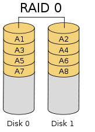

操作系统基础¶
1. 网络相关命令¶
1.1. ip命令¶
ip [option] [动作] [命令]
option: -s、-V等等
动作：
link,关于设备(device)的相关设定。
addr/address:关于ip的设定。
route:与路由有关的设定。 -
ip link show：查看设备相关的信息。
ip link set [device] [动作/参数]：临时修改，重启后失效。
device：ehth0、eth1等设备代号
动作参数：
up|down：启动或关闭某个设备
address：如果这个设备可以更改MAC ,用这个参数修改。
name：给设备修改名字。
mtu：设置最大传输单元。
1.2. ethtool命令¶
查看网卡对应网口 1、ip a ：查看网卡信息 2、ethtool -p eth1：查看网卡对应网口，对应网口会闪烁。
修改网卡名称
通过
ip link命令(重启失效)。ip link set dev 网卡名称 down：禁用网卡 ip link set 原网卡名 name 新网卡名：修改网卡名称 ip link set dev 新网卡名：激活网卡。
查看网络支持带宽和当前带宽
ethtool 网卡名称：查看网口信息，speed。
1.3. ifconfig和nmcli命令¶
网络配置
ifconfig查看网络配置ifconfig 网卡名称 ip ：修改网卡ip ifconfig 网卡名称:0/1 ip：添加第1/2个ip
nmcli查看网络配置nmcli device show：查看当前设备 nmcli device status：查看设备状态 nmcli connection show：查看网卡配置文件等信息 nmcli connection modify 网卡名称 [+]ipv4.addresses ip/24：修改ip地址和子网掩码。 +“表示添加第二个ip地址 mcli connection modify 网卡名称 ipv4.gateway ip：修改网关 mcli connection modify 网卡名称 [+/-]ipv4.dns ip：添加dns。+/-：表示添加/删除第二个dns nmcli connection add type ehtrnet ifname ens8 con-name ens8：添加网卡
2. 网卡绑定¶
双网卡绑定:负载均衡。备用，当一张网卡down时，切换到另一张网卡。
过程：删除需要双网卡绑定的两块设备的配置文件——创建虚拟接口——将两张物理网卡与虚拟网卡绑定——查看配置文件，配置绑定网卡的相关地址——查看绑定网卡的信息——ping测试
nmcli connection show:查看网卡配置文件信息 nmcli connection delete 网卡名称：删除要双网卡绑定的两块设备的配置文件。运行两次，删除两张网卡的配置文件。 nmcli connection add type bond ifname bond0 con-name bond0 mode active-backup miimon 1000：创建虚拟接口 add：添加配置文件 type bond：类型为bond ifname bond0：网卡名称/设备名 con-name bond0：配置文件名称，一般与网卡一致 active-backup：表示只有一个设备处理数据，当发生故障时，则启动备份。 miimon:表示每隔1000ms检查一下网络的连通性 nmcli connection add type ethernet slave-type bond ifname ens33 con-name ens33 master bond0：将两张物理网卡与虚拟接口(bond0)进行绑定。运行两次，分别绑定两张网卡（ens33/ens66）。 nmcli connection show：查看配置文件 nmcli connection modify bond0 ipv4.method manual ipv4.address ip/子网掩码 ipv4.gateway ip ipv4.dns ip autoconnection yes：配置bond0的相关地址 cat /proc/net/bonding/bond0：查看bond0的相关信息
3. 网桥¶
3.1. 修改配置文件来配置（永久，重启不失效）¶
配置物理网卡
vi /etc/network/interfaces DEVICE=网卡名称 ONBOOT =yes BOOTPROTO=none BRIDGE=br0
配置网桥文件
vi /etc/network/interfaces DEVICE=br0 ONBOOT =yes BOOTPROTO=none IPADDR=ip NETMASK=子网掩码 TYPE = brige
添加物理网卡到网桥设备
brctl addif br0 网卡名称 #将物理网卡添加到网桥 brctl show #查看网桥 通过ifconfig查看，ping测试 ### brctl命令创建建网桥（临时的，重启失效） `brctl addbr br0`：创建一个网桥设备 `ifconfig 网卡名称 0`：将物理网卡的ip拆掉 `ifconfig br0 ip/24`：配置网桥设备的ip `brctl addif br0 eth0`：将物理网卡添加到br0网桥设备中
brctl常用命令删除网桥：
brctl delbr 网桥名称# 需要先关闭网桥连接 ip link set 网桥名称 down 或者 ifconfig 网桥名称 down从网桥中删除物理网卡：
brctl delif 网桥名称 物理网卡名称
3.2. nmcli命令创建建网桥¶
过程：创建网桥——绑定网桥——配置网桥地址并激活
nmcli connection add type brige ifname br0 con-name br0 autoconnection yes：创建网桥 atuoconnection yes：开机启动 nmcli connection add type ethernet slave-type brige ifname ens33 con-name ens33 nmcli connection modify br0 ipv4.method manual ipv4.addresses ip地址：配置网桥地址 nmcli connection up br0：激活
4. 字符集¶
字符集在系统中体现形式是一个环境变量。
4.1. 查看字符集¶
echo $LANGlocale
4.2. locale¶
locale是Linux系统中多语言环境的接口，locale命令可以设置和显示程序运行的语言环境。
LC_CTYPE：语言符号及其分类， LC_NUMERIC：数字， LC_TIME：时间显示格式， LC_COLLATE：比较和排序习惯， LC_MONETARY：货币单位， LC_MESSAGES：信息，如提示信息、错误信息、状态信息、标题、标签、按钮和菜单等， LC_PAPER：默认纸张大小， LC_NAME：姓名书写方式， LC_ADDRESS：地址书写方式， LC_TELEPHONE：电话号码书写方式， LC_MEASUREMENT：度量衡表达方式， LC_IDENTIFICATION：locale对自身包含信息的概述。
locale的语法规则是：
语言_地区.字符集编码如：
zh_CN.UTF-8
4.3. 修改字符集¶
在
/etc/profile文件最下面添加两行：export LC_ALL=zh_CN.utf8 export LANG=zh_CN.utf8 source/ect/profile
修改
/etc/locale.gen文件： 1、将需要的语言和字符集的注释打开。 2、执行locale-gen使其生效。
5. 定时任务¶
5.1. 作用¶
在linux系统中可以自动完成操作命令，或者定时备份系统信息数据。
5.2. 种类¶
系统默认自带定时任务：crond(crontab)
一次性定时任务：atd
非7x24小时运行的服务器：anacron
5.3. 定时任务的配置文件¶
vim /etc/crontabcrontab表达式：* * * * * command*：从左到右分别为分钟、小时、日期、月份、星期 执行的命令-：表示一个时间范围执行，比如第一颗*的位置写5-7表示5-7点都执行,：表示分隔时间段，比如最后一颗*为位置写6,0,4表示周六、周日、周四都执行*/数字：表示每隔数字单位时间执行，如第一颗*位置写*/10表示每隔10分钟执行
5.4. 编写定时任务(按照上面配置文件的格式)¶
命令行编写
(crontab -l;echo "crontab表达式") | crontab如：
(crontab -l;encho "* * * * * echo '123' >> /home/test.txt") | crontab： 表示每分钟向/home/test.txt文件中追加写入’123’
文本编写
crontab [options]
-l：列出定时任务列表 -r：删除当前任务列表终端所有任务条目 -i：删除条目时提示是否真的要删除 -e：编辑定时任务文件，实际上编辑的是`/var/spool/cron/crontabs/*`文件 -u：操作指定用户的定时任务
6. 日志轮转任务（最小周期，分钟，小时，天，周）¶
6.1. 日志维护¶
日志维护：日志维护的最主要的工作就是把旧的日志文件删除，从而腾出空间保存新的日志文件；
linux自动完成日志的轮替：logrotate 就是用来进行日志轮替（也叫日志转储）的，也就是把旧的日志文件移动并改名，同时创建一个新的空日志文件用来记录新日志，当旧日志文件超出保存的范围时就删除。
6.2. 轮转日志文件的命名¶
日志文件的命名：旧的日志文件改名之后，主要依靠
/etc/logrotate.conf配置文件中的“dateext”参数来命名。如果配置文件中有“dateext”参数，那么日志会用日期来作为日志文件的后缀，如“secure-20130605”
如果配置文件中没有“dateext”参数，那么日志文件就需要进行改名了。当第一次进行日志轮替时，当前的“secure”日志会自动改名为“secure.1”，然后新建“secure”日志，用来保存新的日志；当第二次进行日志轮替时，“secure.1”会自动改名为“secure.2”，当前的“secure”日志会自动改名为“secure.1”，然后也会新建“secure”日志，用来保存新的日志；以此类推。
6.3. 日志轮转配置文件¶
/etc/logrotate.conf：daily/weekly/monthly：每天/周/月对日志文件进行一次轮替。 rotate n：保存n日志文件，也就是说,如果进行了n+1次日志轮替，就会删除第一个备份曰志。 create [mode owner group]：在日志轮替时，自动创建新的日志文件[制定新日志的权限 所有者 所属组]。 dateext：使用日期作为日志轮替文件的后缀 compress：日志文件是否压缩。如果取消注释,则日志会在转储的同时进行压缩。 include /etc/logrotate.d：包含/etc/logrotate.d/目录中所有的子配置文件。也就是说,会把这个目录中所有的子配置文件读取进来，进行日志轮替。 mail 邮箱地址：当进行日志轮替时.输出内存通过邮件发送到指定的邮件地址。 missingok：如果日志不存在，则忽略该日志的警告信息。 nolifempty：如果日志为空文件，则不进行日志轮替。 minsize 大小：日志轮替的最小值。也就是日志一定要达到这个最小值才会进行轮持，否则就算时间达到也不进行轮替。 size 大小：日志只有大于指定大小才进行日志轮替，而不是按照时间轮替，如size 100k。 sharedscripts：在此关键宇之后的脚本只执行一次。 prerotate/endscript：在日志轮替之前执行脚本命令。endscript标识prerotate脚本结束 postrotate/endscript：在日志轮替之后执行脚本命令。endscripi标识postrotate脚本结束。
注：rotate 和 postrotate 主要用于在日志轮替的同时执行指定的脚本，一般用于日志轮替之后重启服务。这里强调一下，如果你的日志是写入 rsyslog 服务的配置文件的，那么把新日志加入 logrotate 后，一定要重启 rsyslog 服务，否则你会发现，虽然新日志建立了，但数据还是写入了旧的日志当中。那是因为虽然 logrotate 知道日志轮替了，但是 rsyslog 服务并不知道。
同理，如果采用源码包安装了 apache、Nginx 等服务，则需要重启 apache 或 Nginx 服务，同时还要重启 rsyslog 服务，否则日志也不能正常轮替
也可以对轮替日志设置独立参数，如果和默认参数冲突，则独立参数生效(配置文件中添加以下参数)，如：
/var/log/htmp /var/log/wtmp {填写参数} # 中括号中的参数只对/var/log/htmp和/var/log/wtmp有效
6.4. 把自己的日志加入日志轮替¶
目的：有些日志默认没有加入日志轮替(如源码包安装的服务或自己添加的日志)，日志就会不断增长，要不了多久硬盘就被写满了。
方法一：直接在
/etc/logrotate.conf配置文件中写入该日志的轮替策略。方法二：在
/etc/logrotate.d目录中新建该日志的轮替文件，在该轮替文件中写入正确的轮替策略(和轮替日志设置独立参数格式一样)，因为该目录中的文件都会被包含到主配置文件中，所以也可以把日志加入轮替。
7. 设置开机自启¶
rc.local文件中添加启动命令。
vim /etc/rc.local然后在文件最后一行添加要执行程序的绝对路径。（命令应该添加在exit 0之前 ）
在
/etc/init.d目录下添加脚本，并在相应的运行级别目录下建立链接文件指向该脚本。systemctl enable 服务：设置服务为开机自启动。
8. 日志管理服务(rsyslogd)¶
8.1. 日志基本格式¶
rsyslog — 日志管理服务（关心问题：哪类程序，产生什么日志，放到什么地方）
logrotate — 日志论转（将大量的日志，分割管理，删除旧日志）
基本日志格式包含以下四列：
事件产生的时间
发生事件的服务器的主机名
产生事件的服务名或程序名
事件的具体信息
8.2. 配置文件¶
/etc/rsyslog.conf配置文件：rsyslog记录哪些日志，到底记录了什么样的日志，是通过这个
/etc/rsyslog.conf配置文件来决定的。`服务名称[连接符号]日志等级 日志记录的位置：
auth,authpriv.* /var/log/auth.log：认证相关服务.所有日志等级 日志记录的位置。服务名称
auth 安全和认证相关消息（不推荐使用authpriv替代） authpirv 安全和认证相关信息（私有的） cron 系统定时任务cront和at产生的日志 daemon 和各个守护进程相关的日志 ftp ftp守护进程产生的日志 kern 内核产生的日志（不是用户进程产生的） local0-local7 为本地使用预留的服务 lpr 打印产生的日志 mail 邮件收发信息 news 与新闻服务器相关的日志 syslog 有syslogd服务产生的日志信息（虽然服务名称已经改了rsyslogd服务，但是很多配置都还是沿用了syslogd的，这里并没有修改服务名） user 用户等级类别的日志信息 uucp uucp子系统的日志信息，uucp时早期Linux系统进行数据传递的协议，后来也经常用在新闻组服务中。
连接符号
* # 代表所有日志等级，比如：“authpriv.*"代表authpriv认证信息服务产生的日志，所有的日志等级都记录。 . # 代表只要比后面的等级高的（包含该等级）日志都记录下来。比如："cron.info"代表cron服务产生的日志，只要日志等级大于等于info级别，就记录。 .= # 代表只记录所需等级的日志，其他等级的都不记录。比如："*.=emerg"代表任何日志服务产生的日志，只要等级是emerg等级就记录。这种用法及少见，了解就好。 .! # 代表不等于，也就是除了该等级的日志外，其他等级的日志都记录。
日志等级
debug 一般的调试信息说明 info 基本的通知信息 notice 普通信息，但是有一定的重要性 warning 警告信息，但是还不会影响到服务或系统的运行 err 错误信息，一般达到err等级的信息以及可以影响到服务或系统的运行了 crit 临界状况信息，比err等级还要严重 alert 警告状态信息，比crit还要严重。必须立即采取行动 emerg 疼痛等级信息，系统已经无法使用了
日志记录的位置
日志文件的绝对路径，如"/var/log/secure" 系统设备文件，如"/dev/lp0" 转发给远程主机，如"@192.168.0.210:514" 用户名，如"root" 忽略或丢弃日志，如"~"
设备文件名，比如说/dev/lp0打印机，不记录在硬盘里，直接打印出来，这个用的不多。
还可以发给某一个用户，但是这个用户必须要在线，如果没在线发的东西就丢了。
例：主机114的日志发送到113主机
vim /etc/rsyslog.conf：将113（服务端）以下参数取消注释# UDP日志接收 $ModLoad imudp $UDPServerRun 514 # TCP日志接收 $ModLoad imtcp $InputTCPServerRun 514 #加入一下参数表示将日志保存在/opt目录下且文件名格式为ip.log。 $template IpTemplate,"/opt/%FROMHOST-IP%.log" # 日志格式模板，IpTemplate模板名，随便取 *.* ?IpTemplate # 所有日志保存都使用这个模板 :fromhost-ip,isequal,"172.30.22.114" ?IpTemplate # 来自114主机的日志保存使用这个模板
netstat -antulp | grep 514：查看514端口是否开启
vim /etc/rsyslog.conf：在114（客户端）末尾加入以下参数*.* @172.30.22.113:514 # *.*表示转发接收日志，@表示udp *.* @@172.30.22.113:514 # @@表示tcp
9. BMC和IPMI¶
9.1. BMC¶
BMC全称为基板管理控制器（Baseboard Management Controller），是用于监控和管理服务器的专用控制器，主要4个功能如下：
设备信息管理：记录服务器信息（型号、制造商、日期、各部件生产和技术信息、机箱信息、主板信息等）、BMC信息（服务器主机名、IP、BMC固件版本等信息）；
服务器状态监控管理：对服务器各个部件（CPU、内存、硬盘、风扇、机框等）的温度、电压等健康状态进行检测，同时根据各个温度采集点情况实时调整风扇转速保证服务器不产生过温、而且控制总体功耗又不能过高；如果单板部件出现任何异常则通过SNMP协议、SMTP协议、Redfish协议等多种业界通用规范将信息及时上报给上层网管；
服务器的远程控制管理：服务器的开关机、重启、维护、固件更新、系统安装等；
维护管理：日志管理、用户管理、BIOS管理、告警管理等。
BMC是一款服务器接通电源起始即运行的软件，运行在服务器上一款单独的ARM芯片上，这个ARM芯片就是BMC软件的CPU，同时会芯片外围会配置自己的RAM、Flash等器件，只要服务器插上电源线，BMC软件便快速运行起来。BMC是一个独立的系统，它不依赖与系统上的其它硬件（比如CPU、内存等），也不依赖与BIOS、OS等，但是BMC可以与BIOS和OS交互，这样可以起到更好的平台管理作用，OS下有系统管理软件可以与BMC协同工作以达到更好的管理效果。所以可以看出来：
BMC本身也是一个带外处理器（一般都是ARM处理器）的小系统，单独用来处理某些工作也完全是可以的。
BMC是一个独立于服务器系统的小型操作系统。作用是实施服务器远程控制管理、监控等功能。
BMC是集成在主板上或者通过PCIE等各种形式插在主板上的一个芯片，对外表现形式只是一个标准的RJ45网口(标准8位模块化接口)，拥有独立的IP。
BMC是实现IPMI通用接口规范的核心控制器。在支持IPMI v1.5典型接口时，配置上需要有32K的RAM内存和128K的flash memory。当然，配置越高它的性能越强大。
9.2. IPMI¶
IPMI全称是Intelligent platform management interface。 由它的英文我们可以看出，它是一种接口，一种协议。
IPMI定义了什么接口可以让使用对应工具管理者看到。也就是说，我通过BMC来控制这些sensor,Fan,voltage,etc…并计算出结果告诉user一个这些参数的序列。这些参数都可以通过BMC的功能来查询。
IPMI的系统组件主要包括如下：
BMC：baseboard management controller IPMB：Intelligent Platform Management Bus ICMB：Intelligent Chassis management Bus SDR：Sensor Data Record SEL：System Event Log FRU：Field Replacement Unit
9.3. BMC配置¶
bios 上配置 BMC 的 IP、用户、密码
一般服务器主板通常会有3个网口，2个i350口和一个BMC管理口。BIOS中BMC有两个网口设置，dedicate lan和share lan。BMC的管理口就是dedicate lan，连接这个网口，输入dedicate lan ip便可以访问BMC管理界面。
必须设置dedicate lan且链接Mgmt端口后才可访问BMC管理界面。
bios配置BMC的ip、用户、密码
网络配置（BMC network configuration）
重启服务器并长按Delete按钮进入BIOS，选中Sever Mgmt页签。
然后选中BMC network configuration，回车。
进入到BMC管理网络的配置界面，选中Dedicated LAN，然后回车，选中static，回车。
编辑管理口的地址（IP、子网掩码，网关），保存、退出。
用户配置（BMC user configuration）
进入bios，找到BMC的user configuration，设置用户名，密码。
ipmitool命令配置BMC的ip、用户名、密码网络配置
# 显示BMC的IP地址信息(可以使用其它通道号如2，3，4等来查看设备可以使用的通道的信息，通常配置通道1，以下命令中的1都是代表配置通道1) ipmitool lan print 1 ipmitool channel info 1 # 配置ip、netmask、gateway ipmitool lan set <ch_id> ipsrc <status> #设置bmc IP获取方式。ch_id：通道id(需要配置bmc网卡的通道)；status：static，dhcp ipmitool lan set <ch_id> ipaddr <ip> #设置bmc IP地址 ipmitoll lan set <ch_id> netmask 255.255.255.0 #设置bmc子网掩码为24 ipmitool lan set <ch_id> defgw ipaddr <gateway_ip> #设置默认网关
用户配置
ipmitool user list <ch_id> # 列出某通道所有用户(一般是1)的信息 ipmitool user set name <user_id> <username> # 设置用户名（userd_id未使用过为新建用户，使用了为修改用户） ipmitool user set password <user_id> <password> # 设置密码
通过管理口管理服务器
在自己的电脑上通过浏览器打开之前配置的IP。
与BMC的ip网段相同时，BMC可以不配网关。
输入用户名，密码，登陆后可以看到主界面。
10. raid¶
raid：RAID （ Redundant Array of Independent Disks ）即独立磁盘冗余阵列，通常简称为磁盘阵列。
10.1. raid的基本原理¶
RAID 是由多个独立的高性能磁盘驱动器组成的磁盘子系统，从而提供比单个磁盘更高的存储性能和数据冗余的技术。
RAID 是一类多磁盘管理技术，其向主机环境提供了成本适中、数据可靠性高的高性能存储。
SNIA 对 RAID 的定义是 ：一种磁盘阵列，部分物理存储空间用来记录保存在剩余空间上的用户数据的冗余信息。当其中某一个磁盘或访问路径发生故障时，冗余信息可用来重建用户数据。磁盘条带化虽然与 RAID 定义不符，通常还是称为 RAID （即 RAID0 ）。
RAID 中主要有三个关键概念和技术：镜像（ Mirroring ）、数据条带（ Data Stripping ）和数据校验（ Data parity ）。
镜像：将数据复制到多个磁盘，一方面可以提高可靠性，另一方面可并发从两个或多个副本读取数据来提高读性能。显而易见，镜像的写性能要稍低， 确保数据正确地写到多个磁盘需要更多的时间消耗。
数据条带：将数据分片保存在多个不同的磁盘，多个数据分片共同组成一个完整数据副本，这与镜像的多个副本是不同的，它通常用于性能考虑。数据条带具有更高的并发粒度，当访问数据时，可以同时对位于不同磁盘上数据进行读写操作， 从而获得非常可观的 I/O 性能提升 。
数据校验：利用冗余数据进行数据错误检测和修复，冗余数据通常采用海明码、异或操作等算法来计算获得。利用校验功能，可以很大程度上提高磁盘阵列的可靠性、鲁棒性(健壮性/强壮性。在异常和危险情况下系统生存的能力)和容错能力。不过，数据校验需要从多处读取数据并进行计算和对比，会影响系统性能。
不同等级的 RAID 采用一个或多个以上的三种技术，来获得不同的数据可靠性、可用性和 I/O 性能。至于设计何种 RAID （甚至新的等级或类型）或采用何种模式的 RAID ，需要在深入理解系统需求的前提下进行合理选择，综合评估可靠性、性能和成本来进行折中的选择。
10.2. raid的优势¶
大容量：扩大了磁盘的容量，由多个磁盘组成的 RAID 系统具有海量的存储空间。一般来说， RAID 可用容量要小于所有成员磁盘的总容量。不同等级的 RAID 算法需要一定的冗余开销，具体容量开销与采用算法相关。如果已知 RAID 算法和容量，可以计算出 RAID 的可用容量。通常， RAID 容量利用率在 50% ~ 90% 之间。
高性能：RAID 的高性能受益于数据条带化技术。单个磁盘的 I/O 性能受到接口、带宽等计算机技术的限制，性能往往很有 限，容易成为系统性能的瓶颈。通过数据条带化， RAID 将数据 I/O 分散到各个成员磁盘上，从而获得比单个磁盘成倍增长的聚合 I/O 性能。
可靠性：从理论上讲，由多个磁盘组成的 RAID 系统在可靠性方面应该比单个磁盘要差。这里有个隐含假定：单个磁盘故障将导致整个 RAID 不可用。 RAID 采用镜像和数据校验等数据冗余技术，打破了这个假定。 镜像是最为原始的冗余技术，把某组磁盘驱动器上的数据完全复制到另一组磁盘驱动器上，保证总有数据副本可用。 比起镜像 50% 的冗余开销 ，数据校验要小很多，它利用校验冗余信息对数据进行校验和纠错。 RAID 冗余技术大幅提升数据可用性和可靠性，保证了若干磁盘出错时，不 会导致数据的丢失，不影响系统的连续运行。
可管理性：RAID 是一种虚拟化技术，它对多个物理磁盘驱动器虚拟成一个大容量的逻辑驱动器。对于外部主机系统来说， RAID 是一个单一的、快速可靠的大容量磁盘驱动器。这样，用户就可以在这个虚拟驱动器上来组织和存储应用系统数据。 从用户应用角度看，可使存储系统简单易用，管理也很便利。 由于 RAID 内部完成了大量的存储管理工作，管理员只需要管理单个虚拟驱动器，可以节省大量的管理工作。 RAID 可以动态增减磁盘驱动器，可自动进行数据校验和数据重建，这些都可以 大大简化管理工作。
10.3. raid的等级¶
10.3.1. JBOD¶
JBOD （ Just a Bunch Of Disks ）不是标准的 RAID 等级，它通常用来表示一个没有控制软件提供协调控制的磁盘集合。
JBOD 将多个物理磁盘串联起来，提供一个巨大的逻辑磁盘。
JBOD （如下图）的数据存放机制是由第一块磁盘开始按顺序往后存储，当前磁盘存储空间用完后，再依次往后面的磁盘存储数据。
JBOD 存储性能完全等同于单块磁盘，而且也不提供数据安全保护。它只是简单提供一种扩展存储空间的机制， JBOD 可用存储容量等于所有成员磁盘的存储空间之和。目前 JBOD 常指磁盘柜，而不论其是否提供 RAID 功能。
10.3.2. raid的标准等级¶
SNIA 、 Berkeley 等组织机构把 RAID0 、 RAID1 、 RAID2 、 RAID3 、 RAID4 、 RAID5 、 RAID6 七个等级定为标准的 RAID 等级，这也被业界和学术界所公认。标准等级是最基本的 RAID 配置集合，单独或综合利用数据条带、镜像和数据校验技术。标准 RAID 可以组合，即 RAID 组合等级，满足 对性能、安全性、可靠性要求更高的存储应用需求。
10.3.2.1. .raid¶
raid0：无冗错的数据条带。RAID0 是一种简单的、无数据校验的数据条带化技术。实际上不是一种真正的 RAID ，因为它并不提供任何形式的冗余策略。
RAID0 将所在磁盘条带化后组成大容量的存储空间（如下图），将数据分散存储在所有磁盘中，以独立访问方式实现多块磁盘的并读访问。由于可以并发执行 I/O 操作，总线带宽得到充分利用。再加上不需要进行数据校验，RAID0 的性能在所有 RAID 等级中是最高的。理论上讲，一个由 n 块磁盘组成的 RAID0 ，它的读写性能是单个磁盘性能的 n 倍，但由于总线带宽等多种因素的限制，实际的性能提升低于理论值。

RAID0 具有低成本、高读写性能、 100% 的高存储空间利用率等优点，但是它不提供数据冗余保护，一旦数据损坏，将无法恢复。 因此， RAID0 一般适用于对性能要求严格但对数据安全性和可靠性不高的应用，如视频、音频存储、临时数据缓存空间等。
10.3.2.2. .raid¶
raid1：无校验的相互镜像。RAID1 称为镜像，它将数据完全一致地分别写到工作磁盘和镜像 磁盘，它的磁盘空间利用率为 50% 。
RAID1 在数据写入时，响应时间会有所影响，但是读数据的时候没有影响。
RAID1 提供了最佳的数据保护，一旦工作磁盘发生故障，系统自动从镜像磁盘读取数据，不会影响用户工作。工作原理如下图所示。
RAID1 与 RAID0 刚好相反，是为了增强数据安全性使两块磁盘数据呈现完全镜像，从而达到安全性好、技术简单、管理方便。 RAID1 拥有完全容错的能力，但实现成本高。 RAID1 应用于对顺序读写性能要求高以及对数据保护极为重视的应用，如对邮件系统的数据保护。
10.3.2.3. .raid¶
raid2：海明码校验。RAID2 称为纠错海明码磁盘阵列，其设计思想是利用海明码实现数据校验冗余。
海明码是一种在原始数据中加入若干校验码来进行错误检测和纠正的编码技术，其中第 2n 位（ 1, 2, 4, 8, … ）是校验码，其他位置是数据码。因此在 RAID2 中，数据按位存储，每块磁盘存储一位数据编码，磁盘数量取决于所设定的数据存储宽度，可由用户设定。如下图所示的为数据宽度为 4 的 RAID2 ，它需要 4 块数据磁盘和 3 块校验磁盘。如果是 64 位数据宽度，则需要 64 块 数据磁盘和 7 块校验磁盘。可见， RAID2 的数据宽度越大，存储空间利用率越高，但同时需要的磁盘数量也越多。
海明码自身具备纠错能力，因此 RAID2 可以在数据发生错误的情况下对纠正错误，保证数据的安全性。它的数据传输性能相当高，设计复杂性要低于后面介绍的 RAID3 、 RAID4 和 RAID5 。
但是，海明码的数据冗余开销太大，而且 RAID2 的数据输出性能受阵列中最慢磁盘驱动器的限制。再者，海明码是按位运算， RAID2 数据重建非常耗时。由于这些显著的缺陷，再加上大部分磁盘驱动器本身都具备了纠错功能，因此 RAID2 在实际中很少应用，没有形成商业产品，目前主流存储磁盘阵列均不提供 RAID2 支持。
10.3.2.4. .raid¶
raid3：带有专用位校验的数据条带。RAID3 （如下图）是使用专用校验盘的并行访问阵列，它采用一个专用的磁盘作为校验盘，其余磁盘作为数据盘，数据按位和字节的方式交叉存储到各个数据盘中。
RAID3 至少需要三块磁盘，不同磁盘上同一带区的数据作 XOR 校验，校验值写入校验盘中。
RAID3 完好时读性能与 RAID0 完全一致，并行从多个磁盘条带读取数据，性能非常高，同时还提供了数据容错能力。向 RAID3 写入数据时，必须计算与所有同条带的校验值，并将新校验值写入校验盘中。一次写操作包含了写数据块、读取同条带的数据块、计算校验值、写入校验值等多个操作，系统开销非常大，性能较低。
如果 RAID3 中某一磁盘出现故障，不会影响数据读取，可以借助校验数据和其他完好数据来重建数据。假如所要读取的数据块正好位于失效磁盘，则系统需要读取所有同一条带的数据块，并根据校验值重建丢失的数据，系统性能将受到影响。当故障磁盘被更换后，系统按相同的方式重建故障盘中的数据至新磁盘。
RAID3 只需要一个校验盘，阵列的存储空间利用率高，再加上并行访问的特征，能够为高带宽的大量读写提供高性能，适用大容量数据的顺序访问应用，如影像处理、流媒体服务等。目前， RAID5 算法不断改进，在大数据量读取时能够模拟 RAID3 ，而且 RAID3 在出现坏盘时性能会大幅下降，因此常使用 RAID5 替代 RAID3 来运行具有持续性、高带宽、大量读写特征的应用。
10.3.2.5. .raid¶
raid4：带有专用块级校验的数据条带。RAID4 与 RAID3 的原理大致相同，区别在于条带化的方式不同。 RAID4 （图下图）按照 块的方式来组织数据，写操作只涉及当前数据盘和校验盘两个盘，多个 I/O 请求可以同时得到处理，提高了系统性能。 RAID4 按块存储可以保证单块的完整性，可以避免受到其他磁盘上同条带产生的不利影响。
RAID4 在不同磁盘上的同级数据块同样使用 XOR 校验，结果存储在校验盘中。写入数据时， RAID4 按这种方式把各磁盘上的同级数据的校验值写入校验盘，读取时进行即时校验。因此，当某块磁盘的数据块损坏， RAID4 可以通过校验值以及其他磁盘上的同级数据块进行数据重建。
RAID4 提供了 非常好的读性能，但单一的校验盘往往成为系统性能的瓶颈。对于写操作， RAID4 只能一个磁盘一个磁盘地写，并且还要写入校验数据，因此写性能比较差。而且随着成员磁盘数量的增加，校验盘的系统瓶颈将更加突出。正是如上这些限制和不足， RAID4 在实际应用中很少见，主流存储产品也很少使用 RAID4 保护。
10.3.2.6. .raid¶
raid5：带分散校验的数据条带。RAID5 应该是目前最常见的 RAID 等级，它的原理与 RAID4 相似，区别在于校验数据分布在阵列中的所有磁盘上，而没有采用专门的校验磁盘。
对于数据和校验数据，它们的写操作可以同时发生在完全不同的磁盘上。因此， RAID5 不存在 RAID4 中的并发写操作时的校验盘性能瓶颈问题。另外， RAID5 还具备很好的扩展性。当阵列磁盘 数量增加时，并行操作量的能力也随之增长，可比 RAID4 支持更多的磁盘，从而拥有更高的容量以及更高的性能。
RAID5 （如下图）的磁盘上同时存储数据和校验数据，数据块和对应的校验信息存保存在不同的磁盘上，当一个数据盘损坏时，系统可以根据同一条带的其他数据块和对应的校验数据来重建损坏的数据。与其他 RAID 等级一样，重建数据时， RAID5 的性能会受到较大的影响。
RAID5 兼顾存储性能、数据安全和存储成本等各方面因素，它可以理解为 RAID0 和 RAID1 的折中方案，是目前综合性能最佳的数据保护解决方案。 RAID5 基本上可以满足大部分的存储应用需求，数据中心大多采用它作为应用数据的保护方案。
10.3.2.7. .raid¶
raid6：带双重分散校验的数据条带。前面所述的各个 RAID 等级都只能保护因单个磁盘失效而造成的数据丢失。如果两个磁盘同时发生故障，数据将无法恢复。
RAID6 （如下图）引入双重校验的概念，它可以保护阵列中同时出现两个磁盘失效时，阵列仍能够继续工作，不会发生数据丢失。 RAID6 等级是在 RAID5 的基础上为了进一步增强数据保护而设计的一种 RAID 方式，它可以看作是一种扩展的 RAID5 等级。
RAID6 不仅要支持数据的恢复，还要支持校验数据的恢复，因此实现代价很高，控制器的设计也比其他等级更复杂、更昂贵。 RAID6 思想最常见的实现方式是采用两个独立的校验算法，假设称为 P 和 Q ，校验数据可以分别存储在两个不同的校验盘上，或者分散存储在所有成员磁盘中。当两个磁盘同时失效时，即可通过求解两元方程来重建两个磁盘上的数据。
RAID6 具有快速的读取性能、更高的容错能力。但是，它的成本要高于 RAID5 许多，写性能也较差，并有设计和实施非常复杂。因此， RAID6 很少得到实际应用，主要用于对数据安全等级要求非常高的场合。它一般是替代 RAID10 方案的经济性选择。
10.3.3. raid的组合等级¶
标准 RAID 等级各有优势和不足。自然地，我们想到把多个 RAID 等级组合起来，实现优势互补，弥补相互的不足，从而达到在性能、数据安全性等指标上更高的 RAID 系统。目前在业界和学术研究中提到的 RAID 组合等级主要有 RAID00 、 RAID01 、 RAID10 、 RAID100 、 RAID30 、 RAID50 、 RAID53 、 RAID60 ，但实际得到较为广泛应用的只有 RAID01 和 RAID10 两个等级。当然，组合等级的实现成本一般都非常昂贵，只是在 少数特定场合应用。
10.4. raid的实现方式¶
通常计算机功能既可以由硬件来实现，也可以由软件来实现。对于 RAID 系统而言，自然也不例外，它可以采用软件方式实现，也可以采用硬件方式实现，或者采用软硬结合的方式实现。
10.4.1. .软RAID¶
可以使用
mdadm命令实现软raid软 RAID 没有专用的控制芯片和 I/O 芯片，完全由操作系统和 CPU 来实现所的 RAID 的功能。现代操作系统基本上都提供软 RAID 支持，通过在磁盘设备驱动程序上添加一个软件层，提供一个物理驱动器与逻辑驱动器之间的抽象层。
软 RAID 的配置管理和数据恢复都比较简单，但是 RAID 所有任务的处理完全由 CPU 来完成，如计算校验值，所以执行效率比较低下，这种方式需要消耗大量的运算资源，支持 RAID 模式 较少，很难广泛应用。
软 RAID 由操作系统来实现，因此系统所在分区不能作为 RAID 的逻辑成员磁盘，软 RAID 不能保护系统盘。对于部分操作系统而言， RAID 的配置信息保存在系统信息中，而不是单独以文件形式保存在磁盘上。这样当系统意外崩溃而需要重新安装时， RAID 信息就会丢失。另外，磁盘的容错技术并不等于完全支持在线更换、热插拔或热交换，能否支持错误磁盘的热交换与操作系统实现相关，有的操作系统支持热交换。
10.4.2. .硬RAID¶
硬 RAID 拥有自己的 RAID 控制处理与 I/O 处理芯片，甚至还有阵列缓冲，对 CPU 的占用率和整体性能是三类实现中最优的，但实现成本也最高的。硬 RAID 通常都支持热交换技术，在系统运行下更换故障磁盘。
硬 RAID 包含 RAID 卡和主板上集成的 RAID 芯片， 服务器平台多采用 RAID 卡。 RAID 卡由 RAID 核心处理芯片（ RAID 卡上的 CPU ）、端口、缓存和电池 4 部分组成。其中，端口是指 RAID 卡支持的磁盘接口类型，如 IDE/ATA 、 SCSI 、 SATA 、 SAS 、 FC 等接口。
软硬混合RAID
软 RAID 性能欠佳，而且不能保护系统分区，因此很难应用于桌面系统。而硬 RAID 成本非常昂贵，不同 RAID 相互独立，不具互操作性。因此，人们采取软件与硬件结合的方式来实现 RAID ，从而获得在性能和成本上的一个折中，即较高的性价比。
这种 RAID 虽然采用了处理控制芯片，但是为了节省成本，芯片往往比较廉价且处理能力较弱， RAID 的任务处理大部分还是通过固件驱动程序由 CPU 来完成。
10.5. 服务器上配置RAID????????¶
11. 交互/非交互shell,登陆/非登陆shell¶
11.1. 交互shell和非交互shell¶
交互式：顾名思义就是 shell 与用户存在交互。用户登录后，在终端上输入命令，shell 立即执行用户提交的命令。当用户退出后，shell 也终止了。
非交互式：即 shell 与用户不存在交互，而是以 shell script 的方式执行的。shell 读取存放在文件中的命令, 并且执行它们，当它读到文件的结尾，shell 也就终止了。
区分方法
echo $-可以通过打印
$-变量的值，标识已设置的选项，结果中有i就表示这是交互式shell。$-变量不是在所有shell中都有效的，几种流行的shell中：tcsh和csh是无效的bash和ksh是有效的
echo $PS1通过打印
$PS1变量的值,非空表示交互式，空表示非交互式。
11.2. 登陆shell和非登陆shell¶
登陆shell：登录 shell 是指需要用户名、密码登录后进入的 shell，或者通过 –login 选项生成的 shell 。
用户通过输入用户名/密码（或证书认证）后启动的shell；
通过带有 -l 或者 –login 参数的bash命令启动的shell；
例如，系统启动、远程登录、使用su -切换用户、通过bash –login命令启动bash等。
非登录shell：非登录 shell 是指不需要输入用户名和密码即可打开的 shell，比如输入命令
bash或者sh就能进入一个全新的非登录shell。默认情况下，直接命令“bash”就是打开一个新的非登录shell；
使用su切换用户,注意，这里没有中划线；
在 Gnome 或 KDE 中打开一个 “terminal” 窗口，也是一个非登录 shell。
区分方法
echo $0可以通过查看
$0的值，登录 shell 返回-bash，而非登录 shell 返回的是bash。
退出
执行
exit命令， 退出的 shell 可以是登录 或者 非登录 shell ；执行
logout命令，则只能退出登录 shell，不能退出非登录 shell 。
shoptshopt login_shell：off为非登陆shell,on为登陆shell。
12. Linux系统环境变量及配置文件¶
12.1. bash的启动¶
交互式登陆shell或者非交互式登陆shell(指定参数-l)启动时文件执行顺序：
/etc/profile：首先读取并执行/etc/profile全局配置文件中的命令；~/.bash_profile或~/.bash_login或~/.profile：从存在并且可读的第一个文件中读取并执行其中的命令,优先级从高到低。可以将命令放在这些文件中，以重写/etc/profile文件中默认的设置；~/.bash_logout：当用户注销时，bash执行文件~/.bash_logout中的命令，这个文件包含了退出会话时执行的清理命令，如：删除临时文件等。
交互式非登陆shell启动时文件执行顺序： 1.只读取并执行
~/.bashrc文件非交互式非登陆shell(未指定参数-l)启动时(如运行一个shell脚本)文件执行顺序：
它回在环境中查找变量
BASH_ENV,存在则将它的值作为一个文件的名称，读取并执行，如同执行了如下命令： if [ -n “$BASH_ENV” ]; then . “$BASH_ENV”; fi
13. linx的内存机制¶
13.1. 物理内存和虚拟内存¶
直接从物理内存读写数据要比从硬盘读写数据要快的多，因此，我们希望所有数据的读取和写入都在内存完成，而内存是有限的，这样就引出了物理内存与虚拟内存的概念。
物理内存：就是系统硬件提供的内存大小，是真正的内存
虚拟内存：就是为了满足物理内存的不足而提出的策略，它是利用磁盘空间虚拟出的一块逻辑内存，用作虚拟内存的磁盘空间被称为交换空间（Swap Space）
作为物理内存的扩展，linux会在物理内存不足时，使用交换分区的虚拟内存，更详细的说，就是内核会将暂时不用的内存块信息写到交换空间，这样以来，物理内存得到了释放，这块内存就可以用于其它目的，当需要用到原始的内容时，这些信息会被重新从交换空间读入物理内存。
Linux的内存管理采取的是分页存取机制，为了保证物理内存能得到充分的利用，内核会在适当的时候将物理内存中不经常使用的数据块自动交换到虚拟内存中，而将经常使用的信息保留到物理内存。
什么时侯开始使用虚拟内存（swap）
cat /proc/sys/vm/swappiness：输出为60swappiness=60：代表物理内存在使用40%的时候才会使用swap（当剩余物理内存低于40%（40=100-60）时，开始使用交换空间）；swappiness=0：表示最大限度使用物理内存，然后才是 swap空间；swappiness＝100表示积极的使用swap分区，并且把内存上的数据及时的搬运到swap空间里面。
值越大表示越倾向于使用swap。可以设为0，这样做并不会禁止对swap的使用，只是最大限度地降低了使用swap的可能性。
通常情况下：swap分区设置建议是内存的两倍 （内存小于等于4G时），如果内存大于4G，swap只要比内存大就行。另外尽量的将swappiness调低，这样系统的性能会更好。
临时修改swappiness参数：
sysctl vm.swappiness=10永久修改swappiness参数：
# vim /etc/sysctl.conf # 增加以下内容 vm.swappiness = 35
sysctl -p /etc/sysctl.conf：使配置生效
释放swap
首先要保证内存剩余要大于等于swap使用量，否则会宕机！根据内存机制，swap分区一旦释放，所有存放在swap分区的文件都会转存到物理内存上。通常通过重新挂载swap分区完成释放swap。
释放步骤：
查看当前swap分区挂载在哪：
swapon -s# swapon -s Filename Type Size Used Priority /dev/sda5 partition 1324028 0 -1 # ls -l /dev/sda5 brw-rw---- 1 root disk 8, 5 8月 23 09:47 /dev/sda5
关停这个分区：
swapoff /dev/sda5查看状态，无分区内容显示：
swapon -s查看swap分区是否关停，最下面swap行显示全为0：
free将swap挂载到/dev/sda5上：
swapon /dev/sda5查看挂载是否成功：
swapon -s，free
13.2. buffers和cache¶
buffers与cached都是内存操作，用来保存系统曾经打开过的文件以及文件属性信息，这样当操作系统需要读取某些文件时，会首先在buffers 与cached内存区查找，如果找到，直接读出传送给应用程序，如果没有找到需要数据，才从磁盘读取，这就是操作系统的缓存机制，通过缓存，大大提高了操作系统的性能。但buffers与cached缓冲的内容却是不同的。
buffers是用来缓冲块设备做的，它只记录文件系统的元数据（metadata）以及 tracking in-flight pages。
cached是用来给文件做缓冲的。
通俗的说：buffers主要用来存放目录里面有什么内容，文件的属性以及权限等等。而cached直接用来记忆我们打开过的文件和程序。
打开和查找文件来验证：
打开文件
# 第一次打开 time vim test.txt # 1.3G的文件 # 用时：0m8.984s # 第二次打开 time vim test.txt # 用时：0m6.334s
查找文件
# 第一次查找 time find / -size +1b # 用时：0m13.281s # 第二次查找 time find / -size +1b # 用时：0m6.775s
释放缓存：
echo 3 > /proc/sys/vm/drop_caches0：不释放 1：释放页缓存 2：释放dentries和inodes 3：释放所有缓存
free命令中显示的buff/cache
free 命令不直接称为 cache 而非要写成 buff/cache？
这是因为缓冲区和页高速缓存的实现并非天生就是统一的。在 linux 内核 2.4 中才将它们统一。
更早的内核中有两个独立的磁盘缓存：页高速缓存和缓冲区高速缓存。前者缓存页面，后者缓存缓冲区。
缓冲区：buffer
buffer在操作系统中指
buffer cache， 中文一般翻译为 “缓冲区”。要理解缓冲区，必须明确另外两个概念：”扇区” 和 “块”。扇区是设备的最小寻址单元，也叫 “硬扇区” 或 “设备块”；块是操作系统中文件系统的最小寻址单元，也叫 “文件块” 或 “I/O 块”；每个块包含一个或多个扇区，但大小不能超过一个页面，所以一个页可以容纳一个或多个内存中的块。当一个块被调入内存时，它要存储在一个缓冲区中。每个缓冲区与一个块对应。
buffer cache只有块的概念而没有文件的概念，它只是把磁盘上的块直接搬到内存中而不关心块中究竟存放的是什么格式的文件。
页高速缓存：cache
cache 在操作系统中指
page cache，中文一般翻译为 “页高速缓存”。页高速缓存是内核实现的磁盘缓存。它主要用来减少对磁盘的 I/O 操作。具体地讲，是通过把磁盘中的数据缓存到物理内存中，把对磁盘的访问变为对物理内存的访问；
页高速缓存缓存的是内存页面。缓存中的页来自对普通文件、块设备文件(这个指的就是 buffer cache )和内存映射文件的读写。
为了提升对文件的读写效率，Linux 内核会以页大小（4KB）为单位，将文件划分为多数据块。当用户对文件中的某个数据块进行读写操作时，内核首先会申请一个内存页（称为页缓存）与文件中的数据块进行绑定
页高速缓存对普通文件的缓存我们可以这样理解：
当内核要读一个文件(比如/etc/hosts)时，它会先检查这个文件的数据是不是已经在页高速缓存中：
如果在，就放弃访问磁盘，直接从内存中读取。这个行为称为缓存命中；
如果数据不在缓存中，就是未命中缓存，此时内核就要调度块 I/O 操作从磁盘去读取数据。然后内核将读来的数据放入页高速缓存中。这种缓存的目标是文件系统可以识别的文件(比如 /etc/hosts)。
页高速缓存对块设备文件的缓存就是前面介绍的
buffer cahce。因为独立的磁盘块通过缓冲区也被存入了页高速缓存(缓冲区最终是由页高速缓存来承载的)。
综上：无论是缓冲区还是页高速缓存，它们的实现方式都是一样的。缓冲区只不过是一种概念上比较特殊的页高速缓存罢了。
free命令中显示的free和available
free是真正尚未被使用的物理内存数量；至于
available就比较有意思了，它是从应用程序的角度看到的可用内存数量；Linux 内核为了提升磁盘操作的性能，会消耗一部分内存去缓存磁盘数据，就是
buffer和cache。所以对于内核来说，buffer和cache都属于已经被使用的内存；当应用程序需要内存时，如果没有足够的
free内存可以用，内核就会从buffer和cache中回收内存来满足应用程序的请求；所以从应用程序的角度来说，
available = free + buffer + cache。请注意，这只是一个很理想的计算方式，实际中的数据往往有较大的误差。
14. Linux虚拟文件系统¶
14.1. 文件系统¶
操作系统中负责管理和存储文件信息的软件机构称为文件管理系统，简称文件系统。
通常文件系统是用于存储和组织文件的一种机制，便于对文件进行方便的查找与访问。
文件系统是对文件存储设备的空间进行组织和分配，负责文件存储并对存入的文件进行保护和检索的系统。
它负责为用户建立文件，存入、读出、修改、转储文件，控制文件的存取，当用户不再使用时撤销文件等。
随着文件种类的增多，扩增了更多的文件系统，为了对各种文件系统进行统一的管理与组织
14.2. Linux文件系统¶
linux将文件系统分为了两层：VFS（虚拟文件系统）、具体文件系统，如下图所示：
VFS（Virtual Filesystem Switch）称为虚拟文件系统或虚拟文件系统转换，是一个内核软件层，在具体的文件系统之上抽象的一层，用来处理与Posix文件系统相关的所有调用，表现为能够给各种文件系统提供一个通用的接口，使上层的应用程序能够使用通用的接口访问不同文件系统，同时也为不同文件系统的通信提供了媒介。
Posix:即Portable Operating System Interface，是一种移植性操作系统接口标准，它定义了编写可移植程序的规则和技术；
POSIX标准由IEEE制定，它定义了操作系统的接口，包括文件系统、进程、线程、网络、安全、编程语言等。它还定义了一些操作系统特性，例如文件操作、进程控制、网络操作、安全控制等。
POSIX标准的实施使得程序在不同的操作系统上都能够正常运行，从而极大地提高了开发效率。它的实施还使得程序员可以轻松地在不同的操作系统上开发应用程序，而无需考虑操作系统的差异性。
VFS并不是一种实际的文件系统，它只存在于内存中，不存在任何外存空间，VFS在系统启动时建立，在系统关闭时消亡。
VFS由超级块、inode、dentry、vfsmount等结构来组成。
Linux系统中存在很多的文件系统，例如常见的ext2,ext3,ext4,sysfs,rootfs,proc…
14.3. VFS¶
VFS在linux架构中的位置
从用户的使用角度，Linux下的文件系统中宏观上主要分为三层：
上层的文件系统的系统调用（System-call ）；
虚拟文件系统VFS(Virtual File System)层，
挂载到VFS中的各种实际文件系统。
VFS在整个Linux系统中的架构视图如下：
Linux系统的User使用GLIBC（POSIX标准、GUN C运行时库）作为应用程序的运行时库，然后通过操作系统，将其转换为系统调用SCI（system-call interface），SCI是操作系统内核定义的系统调用接口，这层抽象允许用户程序的I/O操作转换为内核的接口调用。
用户如何透明的去处理文件？
我们知道每个文件系统是独立的，有自己的组织方法，操作方法。那么对于用户来说，不可能所有的文件系统都了解，那么怎么做到让用户透明的去处理文件呢？
例如：我想写文件，那就直接read就OK，不管你是什么文件系统，具体怎么去读！这里就需要引入虚拟文件系统。
所以虚拟文件系统就是：对于一个system，可以存在多个“实际的文件系统”，例如：**ext2，ext3，fat32，ntfs…**例如我现在有多个分区，对于每一个分区我们知道可以是不同的“实际文件系统”。
例如现在三个磁盘分区分别是：ext2，ext3，fat32，那么每个“实际的文件系统”的操作和数据结构肯定不一样，那么，用户怎么能透明使用它们呢？
这个时候就需要VFS作为中间一层！用户直接和VFS打交道。
VFS是一种软件机制，只存在于内存中，每次系统初始化期间Linux都会先在内存中构造一棵VFS的目录树（也就是源码中的namespace）；
VFS主要的作用是对上层应用屏蔽底层不同的调用方法，提供一套统一的调用接口，二是便于对不同的文件系统进行组织管理；
VFS提供了一个抽象层，将POSIX API接口与不同存储设备的具体接口实现进行了分离，使得底层的文件系统类型、设备类型对上层应用程序透明；
例如
read，write，那么映射到VFS中就是sys_read，sys_write，那么VFS可以根据你操作的是哪个“实际文件系统”(哪个分区)来进行不同的实际的操作！这个技术也是很熟悉的“钩子结构”技术来处理的。其实就是VFS中提供一个抽象的struct结构体，然后对于每一个具体的文件系统要把自己的字段和函数填充进去，这样就解决了异构问题（内核很多子系统都大量使用了这种机制）。
14.4. Linux虚拟文件系统四大对象¶
为了对文件系统进行统一的管理与组织，Linux创建了一个公共根目录和全局文件系统树。要访问一个文件系统中的文件，必须先将这个文件系统挂载在全局文件系统树的某个根目录下，这一挂载过程被称作文件系统的挂载，所挂载的目录称为挂载点。
传统的文件系统在磁盘上的布局如下：
由上图可知，文件系统的开头通常是由一个磁盘扇区所组成的引导块，该部分的主要目的是用于对操作系统的引导。一般只在启动操作系统时使用。
随后是超级块，超级块主要存放了该物理磁盘中文件系统结构的相关信息，并且对各个部分的大小进行说明。
最后由i节点位图，逻辑块位图、i节点、逻辑块这几部分分布在物理磁盘上。
Linux为了对超级块，i节点，逻辑块这三部分进行高效的管理，Linux创建了几种不同的数据结构，分别是文件系统类型、inode、dentry等几种。
其中，文件系统类型规定了某种文件系统的行为，利用该数据结构可以构造某种文件系统类型的实例，另外，该实例也被称为超级块实例。
超级块则是反映了文件系统整体的控制信息。超级块能够以多种的方式存在，对于基于磁盘的文件系统，它以特定的格式存在于磁盘的固定区域（取决于文件系统类型）上。在挂载文件系统时，该超级块中的内容被读入磁盘中，从而构建出位于内存中的新的超级块。
inode则反映了文件系统对象中的一般元数据信息。
dentry则是反映出某个文件系统对象在全局文件系统树中的位置
14.5. 超级块¶
超级块(super block)：一个超级块对应一个文件系统(已经安装的文件系统类型如ext2，此处是实际的文件系统，不是VFS)。
之前我们已经说了文件系统用于管理这些文件的数据格式和操作之类的，系统文件有系统文件自己的文件系统，同时对于不同的磁盘分区也有可以是不同的文件系统。那么一个超级块对于一个独立的文件系统。保存文件系统的类型、大小、状态等等。
“文件系统”和“文件系统类型”不一样！一个文件系统类型下可以包括很多文件系统即很多的super_block
14.6. inode¶
索引节点inode： 保存的其实是实际的数据的一些信息，这些信息称为“元数据”(也就是对文件属性的描述)。
例如：文件大小，设备标识符，用户标识符，用户组标识符，文件模式，扩展属性，文件读取或修改的时间戳，链接数量，指向存储该内容的磁盘区块的指针，文件分类等等。
数据分成：**元数据+数据本身 **
inode有两种，一种是VFS的inode，一种是具体文件系统的inode。前者在内存中，后者在磁盘中。所以每次其实是将磁盘中的inode调进填充内存中的inode，这样才是算使用了磁盘文件inode。
14.6.1. inode怎样生成的¶
每个inode节点的大小，一般是128字节或256字节。inode节点的总数，在格式化时就给定(现代OS可以动态变化)，一般每2KB就设置一个inode。
一般文件系统中很少有文件小于2KB的，所以预定按照2KB分，一般inode是用不完的。所以inode在文件系统安装的时候会有一个默认数量，后期会根据实际的需要发生变化。
注意inode号：inode号是唯一的，表示不同的文件。其实在Linux内部的时候，访问文件都是通过inode号来进行的，所谓文件名仅仅是给用户容易使用的。
当我们打开一个文件的时候，首先，系统找到这个文件名对应的inode号；然后，通过inode号，得到inode信息，最后，由inode找到文件数据所在的block，现在可以处理文件数据了
14.6.2. inode和文件的关系¶
当创建一个文件的时候，就给文件分配了一个inode。一个inode只对应一个实际文件，一个文件也会只有一个inode。inodes最大数量就是文件的最大数量。
14.7. dentry¶
目录项（dentry）是描述文件的逻辑属性，只存在于内存中，并没有实际对应的磁盘上的描述，更确切的说是存在于内存的目录项缓存，为了提高查找性能而设计。
注意不管是文件夹还是最终的文件，都是属于目录项，所有的目录项在一起构成一颗庞大的目录树。
例如：open一个文件
/home/xxx/yyy.txt，那么/、home、xxx、yyy.txt都是一个目录项，VFS在查找的时候，根据一层一层的目录项找到对应的每个目录项的inode，那么沿着目录项进行操作就可以找到最终的文件。注意：目录也是一种文件(所以也存在对应的inode)。打开目录，实际上就是打开目录文件
14.8. file¶
文件对象(file)描述的是进程已经打开的文件。因为一个文件可以被多个进程打开，所以一个文件可以存在多个文件对象。但是由于文件是唯一的，那么inode就是唯一的，目录项也是定的！
进程其实是通过文件描述符来操作文件的，每个文件都有一个32位的数字来表示下一个读写的字节位置，这个数字叫做文件位置。
一般情况下打开文件后，打开位置都是从0开始，除非一些特殊情况。Linux用file结构体来保存打开的文件的位置，所以file称为打开的文件描述。file结构形成一个双链表，称为系统打开
linux中,常常用文件描述符(file descriptor)来表示一个打开的文件,这个描述符的值往往是一个大于或等于0的整数;我们通常所说的文件描述符其实是进程打开的文件对象数组的索引值
14.9. 其它¶
VFS文件系统中的inode和dentry与实际文件系统的inode和dentry有一定的关系，但不能等同。
真实磁盘文件的inode和dentry是存在于物理外存上的，但VFS中的inode和dentry是存在于内存中的，系统读取外存中的inode和dentry信息进行一定加工后，生成内存中的inode和dentry。
虚拟的文件系统也具有inode和dentry结构，只是这是系统根据相应的规则生成的，不存在于实际外存中。
15. 各目录或文件¶
15.1. 目录¶
15.1.1. ./var/log/¶
/var/log/目录下各日志文件：/var/log/auth.log：登录认证的信息记录。 /var/log/messages：包括整体系统信息，其中也包含系统启动期间的日志。此外，mail，cron，daemon，kern和auth等内容也记录在var/log/messages日志中。 /var/log/dmesg ： 包含内核缓冲信息（kernel ring buffer）。在系统启动时，会在屏幕上显示许多与硬件有关的信息。可以用dmesg查看它们。 /var/log/boot.log ： 包含系统启动时的日志。 /var/log/daemon.log ： 包含各种系统后台守护进程日志信息。 /var/log/dpkg.log ： 包括安装或dpkg命令清除软件包的日志。 /var/log/kern.log ： 包含内核产生的日志，有助于在定制内核时解决问题。 /var/log/lastlog ： 记录所有用户的最近信息。这不是一个ASCII文件，因此需要用lastlog命令查看内容。 /var/log/maillog /var/log/mail.log ： 包含来着系统运行电子邮件服务器的日志信息。例如，sendmail日志信息就全部送到这个文件中。 /var/log/user.log ： 记录所有等级用户信息的日志。 /var/log/Xorg.x.log ： 来自X的日志信息。Xorg是linux的GUI图形化进程，xorg是X11的一个实现，而X Window System是一个C/S结构的程序，Xorg只是提供了一个X Server，负责底层的操作当你运行一个程序的时候，这个程序会连接到X server上，由X server接收键盘鼠标输入和负责屏幕输出窗口的移动，窗口标题的样式等等。 /var/log/alternatives.log ： 更新替代信息都记录在这个文件中。 /var/log/btmp ： 记录所有失败登录信息。使用last命令可以查看btmp文件。例如，”last -f /var/log/btmp | more“。 /var/log/cups ： 涉及所有打印信息的日志。 /var/log/anaconda.log ： 在安装Linux时，所有安装信息都储存在这个文件中。 /var/log/cron ： 每当cron进程开始一个工作时，就会将相关信息记录在这个文件中。 /var/log/secure ： 包含验证和授权方面信息。例如，sshd会将所有信息记录（其中包括失败登录）在这里。 /var/log/wtmp或/var/log/utmp ： 包含登录信息。使用wtmp可以找出谁正在登陆进入系统，谁使用命令显示这个文件或信息等。 /var/log/faillog ： 包含用户登录失败信息。此外，错误登录命令也会记录在本文件中。 /var/log/httpd/或/var/log/apache2 ： 包含服务器access_log和error_log信息。 /var/log/lighttpd/ ： 包含light HTTPD的access_log和error_log。 /var/log/mail/ ： 这个子目录包含邮件服务器的额外日志。 /var/log/prelink/ ： 包含.so文件被prelink修改的信息。 /var/log/audit/ ： 包含被 Linux audit daemon储存的信息。 /var/log/samba/ ： 包含由samba存储的信息。 /var/log/sa/ ： 包含每日由sysstat软件包收集的sar文件。 /var/log/sssd/ ： 用于守护进程安全服务。
15.1.2. ./etc/modprobe.d/¶
通过配置文件向模块传递参数：在该目录下放入任意名称
*.conf文件，如：bonding.conf其中放入向bond模块传递的参数模块黑名单：在该目录下创建
*.conf文件，使用blacklist关键字屏蔽不需要的模块blacklist tipc注：此处已经屏蔽了tipc模块，但是如果另外一个模块依赖于tipc，那么tipc模块还是会被加载，要避免这个行为，可以让modprobe使用自定义的install命令，直接返回导入失败：
# /etc/modprobe.d/blacklist.conf install ticp /bin/false # 这样就可以屏蔽tipc模块和依赖它的模块
15.1.3. ./lib/modules/uname -r¶
目录包含系统核心可加载各种模块，尤其是那些在恢复损坏的系统时重新引导系统所需的模块(例如网络和文件系统驱动)
15.1.4. ./etc/pam.d/¶
在linux中执行有些程序时，这些程序在执行前首先要对启动它的用户进行认证，符合一定的要求之后才允许执行，例如login, su等
在linux中进行身份或是状态的验证程序是由PAM来进行的，PAM（Pluggable Authentication Modules）可动态加载验证模块，因为可以按需要动态的对验证的内容进行变更，所以可以大大提高验证的灵活性。
linux各个发行版中，PAM使用的验证模块一般存放在
/lib/security/目录下，可以使用ls命令进行查看本计算机支持哪些验证控制方式，一般的PAM模块名字例如pam_unix.so，模块可以随时在这个目录下添加和删除，这不会直接影响程序运行，具体的影响在PAM的配置目录下。PAM的配置文件一般存放在
/etc/pam.conf文件，或者/etc/pam.d/目录下。不过现在一般都会存放在/etc/pam.d/目录下，之下是相对于每个需要被PAM控制的程序的独立配置文件。当一个程序的验证方式配置在pam.conf和pam.d/下某文件中出现时，以pam.d/目录下文件为准。查看某个程序是否支持PAM，使用命令：
lddwhich cmd| grep libpam：cmd就代表查看的程序名，查看该程序运行所需要的共享库是否包含libpam库，如果包含那么该程序就支持PAM验证。
以login为例：
# vim /etc/pam.d/login auth optional pam_faildelay.so delay=3000000 auth required pam_securetty.so auth requisite pam_nologin.so session [success=ok ignore=ignore module_unknow=ignore default=bad] pam_selinux.so close @include common-auth
上面可以看出来，配置文件是按行指定的，每一行是一个完整的定义。
一般第一列指定的内容是PAM 模块接口：
module-type，一共就只有4种，分别是：auth：认证模块接口，如验证用户身份（如提示输入密码，判断是root否）、检查密码是否可以通过，并设置用户凭据； account：账户模块接口，对账号各项属性进行检查，检查指定账户是否满足当前验证条件（如用户是否有权访问所请求的服务，检查账户是否到期，是否允许登录，是否达到最大用户数等）； session：模块接口，用于管理和配置用户会话（如登录连接信息，用户数据的打开和关闭，挂载fs）。会话在用户成功认证之后启动生效； password：密码模块接口，用于更改用户密码，以及强制使用强密码配置。
第二列内容是PAM 控制标志：
control-flag，所有的 PAM 模块被调用时都会返回成功或者失败的结果，每个 PAM 模块中由多个对应的控制标志决定结果是否通过或失败。每一个控制标志对应一个处理结果，PAM 库将这些通过/失败的结果整合为一个整体的通过/失败结果，然后将结果返回给应用程序。模块可以按特定的顺序堆叠。控制标志是实现用户在对某一个特定的应用程序或服务身份验证的具体实现细节。该控制标志是 PAM 配置文件中的第二个字段，PAM 控制标志如下：optional：该模块返回的通过/失败结果被忽略。当没有其他模块被引用时，标记为 optional 模块并且成功验证时该模块才是必须的。该模块被调用来执行一些操作，并不影响模块堆栈的结果；不进行成功与否的返回，一般返回一个pam_ignore； required：表示需要返回一个成功值，如果返回失败，不会立刻将失败结果返回，而是继续进行同类型的下一验证，所有此类型的模块都执行完成后，再返回失败； requisite：与required类似，但如果此模块返回失败，则立刻返回失败并表示此类型失败； sufficient：模块结果如果测试失败，将被忽略。如果 sufficient 模块测试成功，并且之前的 required 模块没有发生故障，PAM 会向应用程序返回通过的结果，不会再调用堆栈中其他模块； include：与其他控制标志不同，include 与模块结果的处理方式无关。该标志用于直接引用其他 PAM 模块的配置参数。
第三列内容是PAM模块的存放路径，默认是在
/lib/security/目录下，如果不在此默认路径下，要填写绝对路径。第四列内容是PAM模块参数，这个需要根据所使用的模块来添加。
例：对linux系统的登录程序login进行针对用户和时间的登录限制。使用模块pam_time.so
检查login程序是否支持PAM
在
/etc/pam.d/下修改login配置文件在login配置文件中，在auth的定义之后，加入account的一条验证：
account requisite pam_time.so
pam_time.so这个模块需要定义另外一个配置文件time.conf在
/etc/security/time.conf中定义限制的具体用户和时间vim /etc/security/time.conflogin;tty3;test1;Th2100-2300：作用程序是login，作用在tty3上，test1用户允许在周四2100-2300间登录login;!tty3;!test1;!Th2100-2300：作用程序是login，作用在tty3以外，对用户test1之外产生影响，允许登录时间是周四2100-2300之外
对PAM的应用是立刻生效，可以切换到其他tty上进行测试。
常用pam模块介绍：
| 模块 | 模块接口 | 介绍 |
|---|---|---|
| pam_unix.so | auth | 提示用户输入密码,并与/etc/shadow文件相比对,匹配返回0 |
| account | 检查用户的账号信息(包括是否过期等),帐号可用时,返回0 | |
| password | 修改用户的密码,将用户输入的密码,作为用户的新密码更新shadow文件 |
15.1.5. ./lib/security/¶
存放pam模块的目录
15.1.6. ./proc/net/¶
这个目录包含了网络相关的信息，如网络接口、连接状态、路由表等。
15.1.7. ./proc/sys/¶
这个目录包含了内核运行时的各种参数和配置信息。可以通过读写这些文件来修改内核的行为。
15.1.8. ./sys/block/¶
该目录下的所有子目录代表着系统中当前被发现的所有块设备,其中的内容为指向它们在
/sys/devices/中真实设备的符号链接文件。
15.1.9. ./proc/¶
proc是一个虚拟文件系统，我们可以通过对它的读写操作作为与kernel实体间进行通信的一种手段。也就是说可以通过修改
/proc/中的文件，来对当前kernel的行为做出调整。
15.2. 文件¶
15.2.1. .#/etc/mtab和/etc/fstab¶
15.2.1.1. /etc/mtab¶
记载的是现在系统已经装载的文件系统，包括操作系统建立的虚拟文件等。直接使用
mount命令就是通过查询它而来。当用
mount命令进行挂载时，会将所有的选项与参数信息写入到该文件内。文件内格式与
/etc/fstab内一样
15.2.2. /etc/fstab¶
是系统启动时的配置文件，在该文件内记录的磁盘在系统启动时会自动挂载
# <file system> <mount point> <type> <options> <dump> <pass> # / was on /dev/sda1 during installation UUID=c8e12bf0-7df4-4fbc-8ec0-bddbb2343608 / ext4 errors=remount-ro 0 1 # swap was on /dev/sda5 during installation UUID=3810e971-f065-4793-9b93-98ac6a403e03 none swap sw 0 0 /dev/sr0 /media/cdrom0 udf,iso9660 user,noauto 0 0
file system：磁盘设备文件名或UUID或Lable name
该字段定义希望加载的文件系统所在的设备或远程文件系统，对于一般的本地块设备情况来说：IDE设备一般描述为
/dev/hdaXN，X是IDE设备通道(a, b, or c)，N代表分区号；SCSI设备一描述为/dev/sdaXN。对于NFS情况，格式一般为IP:directory: ,例如：knuth.aeb.nl:/。对于procfs，使用proc来定义。 当然，此列可以使用加载分区的label名称来代替具体的分区名称。
mount point：挂载目录。
该字段描述希望的文件系统加载的目录点，对于swap设备，该字段为none；对于加载目录名包含空格的情况，用40来表示空格。
type：设备文件系统。
此项定义了该设备上的文件系统，一般常见的文件类型为ext2 (Linux设备的常用文件类型)、vfat(Windows系统的fat32格式)、NTFS、iso9600等。
options：文件系统参数。
指定加载该设备的文件系统是需要使用的特定参数选项，多个参数是由逗号分隔开来。对于大多数系统使用”defaults”就可以满足需要。
dump：能否使用dump备份命令作用。
该选项被
dump命令使用来检查一个文件系统应该以多快频率进行转储，若不需要转储就设置该字段为0。0为不备份，1为要备份，现在有太多的备份方案，这个地方直接输入0就好了。
pass：是否以
fsck检验扇区。该字段被
fsck命令用来决定在启动时需要被扫描的文件系统的顺序，根文件系统/对应该字段的值应该为1，其他文件系统应该为2。若该文件系统无需在启动时扫描，则设置该字段为0。
文件参数 | 参数 | 解释 | | - - - | - - - | | async(默认)，sync | 此文件系统是否使用同步写入的内存机制 | | atime，noatime | 文件系统是否会修改文件的读取时间。为了性能，某些时刻会使用noatime | | ro，rw | 文件系统是只读(ro)还是可读写(rw) | | auto(默认)，noauto | 当执行mount -a时，此文件系统是否会被主动测试挂载 | | dev，nodev | 文件系统是否可以建立设备文件 | | suid，nosuid | 文件系统是否可以含有suid/sgid的文件格式 | | exec，noexec | 文件系统是否可以拥有可执行的二进制文件 | | user，nouser | 是否允许文件系统让任何使用者都可以执行mount命令。一般来说，mount仅有root可以进行 | | defaults | 默认值为：rw、suid、dev、exec、auto、nouser、async | | remount | 重新挂载。这在系统出错，或重新更新参数时很有用 | | codepage=数值 | 挂载USB移动磁盘时，指定挂载的文件系统所使用的语系。中文语系为：950 | | iocharset=编码名 | 挂载USB移动磁盘时，指定移动磁盘的编码。一般有：utf8、Big5 | | loop | 进行loop设备挂载时会使用到 |
15.2.3. ./etc/modules¶
内核模块文件，里面列出的模块会在系统启动时自动加载。
15.2.4. ./etc/pam.d/common-auth¶
…
15.2.5. ./proc/cpuinfo¶
物理CPU数（physical id）：主板上实际插入的cpu数量，不重复的 physical id 有几个就有多少个物理CPU；
CPU核心数（cpu cores）：核心又称为内核，是CPU最重要的组成部分。CPU中心那块隆起的芯片就是核心，这里就是指单个CPU里核心的数量。如双核、四核等；
逻辑CPU数，一般情况下：
逻辑CPU=物理CPU个数×每颗核数# 不支持超线程技术或没有开启此技术将每个物理核心虚拟成了两个逻辑cpu核心，看起来就像多个cpu在同时处理任务。
逻辑CPU=物理CPU个数×每颗核数 *2# 表示服务器的CPU支持超线程技术
关键参数
processor ：逻辑CPU的编号，从0开始排序 vendor_id ：CPU制造商 cpu family ：CPU产品系列代号 model ：CPU属于其系列中的哪一代的代号 model name ：CPU属于的名字及其编号、标称主频 stepping ：CPU属于制作更新版本 cpu MHz ：CPU的实际使用主频 cache size ：CPU二级缓存大小 physical id ：单个物理CPU的标号，每个id值都代表一个唯一的物理CPU siblings ：单个物理CPU的逻辑CPU数。超频了则 siblings=2*cpu cores；没超频则 siblings=cpu cores core id ：单个内核在其所处CPU中的编号，这个编号不一定连续。（即一个物理CPU一般都是多核的） cpu cores ：单个物理CPU中封装的内核数 flags : 当前cpu支持的功能
15.2.6. ./proc/net/arp¶
查看当前的arp缓存情况
15.2.7. ./etc/profile¶
为root用户和其它用户设置全局变量PATH：可执行程序路径；
遍历/etc/profile.d/目录下的所有.sh结尾的脚本文件，可读则执行；
15.2.8. ./proc/sys/dev/cdrom/info¶
光驱设备信息
15.2.9. ./proc/net/dev¶
网卡统计信息
15.2.10. ./sys/kernel/debug/usb/devices¶
Linux 下查看USB设备最常用的命令就是
lsusb，但是 lsusb 仅能查看当前的简单 USB 设备信息，要查看详细的 USB 设备信息，最好还是借助 Linux 下的 debugfs 机制。挂载
debugfs：mount -t debugfs none /sys/kernel/debug/通过
debugfs查看USB设备信息：cat /sys/kernel/debug/usb/devices
设备详细信息解释：
T：总线拓扑（Topology）结构（Lev, Prnt, Port, Cnt, 等），是指USB设备和主机之间的连接⽅式；# d --> 十进制数；x --> 十六进制数；s --> 字符串 T: Bus=dd Lev=dd Prnt=dd Port=dd Cnt=dd Dev#=ddd Spd=ddd MxCh=dd | | | | | | | | |__最⼤⼦设备 | | | | | | | |__设备速度（Mbps） | | | | | | |__设备编号 | | | | | |__这层的设备数 | | | | |__此设备的⽗连接器/端⼝ | | | |__⽗设备号 | | |__此总线在拓扑结构中的层次 | |__总线编号 |__拓扑信息标志
B：带宽（Bandwidth）（仅⽤于USB主控制器）；B: Alloc=ddd/ddd us (xx%), #Int=ddd, #Iso=ddd | | | |__同步请求编号 | | |__中断请求号 | |__分配给此总线的总带宽 |__带宽信息标志
D：设备（Device）描述信息；
D: Ver=x.xx Cls=xx(sssss) Sub=xx Prot=xx MxPS=dd #Cfgs=dd | | | | | | |__配置编号 | | | | | |______缺省终端点的最⼤包尺⼨ | | | | |__设备协议 | | | |__设备⼦类型 | | |__设备类型 | |__设备USB版本 |__设备信息标志编号#1
P：产品（Product）标识信息；P: Vendor=xxxx ProdID=xxxx Rev=xx.xx | | | |__产品修订号 | | |__产品标识编码 | |__制造商标识编码 |__设备信息标志编号#2
S：字符串（String）描述符；S: Manufacturer=ssss | |__设备上读出的制造商信息 |__串描述信息 S: Product=ssss | |__设备上读出的产品描述信息，对于USB主控制器此字段为"USB *HCI Root Hub" |__串描述信息 S: SerialNumber=ssss | |__设备上读出的序列号，对于USB主控制器它是⼀个⽣成的字符串，表⽰设备标识 |__串描述信息
C：配置（Config）描述信息 (* 表⽰活动配置)C: #Ifs=dd Cfg#=dd Atr=xx MPwr=dddmA | | | | |__最⼤电流（mA） | | | |__属性 | | |__配置编号 | |__接⼝数 |__配置信息标志
I：接⼝（Interface）描述信息。I: If#=dd Alt=dd #EPs=dd Cls=xx(sssss) Sub=xx Prot=xx Driver=ssss | | | | | | | |__驱动名 | | | | | | |__接⼝协议 | | | | | |__接⼝⼦类 | | | | |__接⼝类 | | | |__端点数 | | |__可变设置编号 | |__接⼝编号 |__接⼝信息标志
E：端点（Endpoint）描述信息E: Ad=xx(s) Atr=xx(ssss) MxPS=dddd Ivl=dddms | | | | |__间隔 | | | |__终端点最⼤包尺⼨ | | |__属性(终端点类型) | |__终端点地址(I=In,O=Out) |__终端点信息标志
15.2.11. .网络有关的设置文件¶
/etc/host.conf：配置域名服务客户端的控制文件作用：指定主机名查找方法，通常指先查找文件/etc/hosts,找不到时再向DNS服务器请求
默认情况，/etc/hosts.conf 文件有如下内容：
order hosts,bind multi on
order：是解析顺序的参数，order hosts,bind,nis，说明先查询解析/etc/hosts文件，然后DNS，再是NISmulti：表示是否运行/etc/hosts文件允许主机指定多个地址 ，multi on表示运行，多个IP地址的主机一般称为多穴主机nospoof：是否允许服务器对ip地址进行其欺骗，nospoof on表示不允许，IP欺骗是一种攻击系统安全的手段，通过把IP地址伪装成别的计算机，来取得其它计算机的信任rccorder：所有查询是否进行重新排序，rccorder on，表示所有查询将被重新排序。
/etc/hosts：配置主机名和IP地址的映射/etc/resolv.conf：域名服务客户端的配置文件，指定域名服务器的IP地址作用：是DNS客户机的配置文件，用于设置DNS服务器的IP地址及DNS域名，还包含了主机的域名搜索顺序。该文件是由域名解析器(resolver，一个根据主机名解析IP地址的库)使用的配置文件。它的格式比较简单，每行以一个关键字开头，后接一个或多个由空格隔开的参数：
nameserver：定义DNS服务器的IP地址 domain：定义本地域名 search：定义域名的搜索列表 sortlist：对返回的域名进行排序 注意：这里最主要的就是nameserver关键字，如果没有指定nameserver就找不到DNS服务，其它关键字是可选的。
/etc/network/interfaces：用于设置网络配置信息(IP地址，子网掩码，网关IP等)/etc/udev/rules.d/70-persistent-net.rules：记录主机中所有网卡的MAC地址/etc/xinetd.conf：定义了由进程守护程序xinetd所守护的网络服务/etc/networks：实现域名与网络地址的映射/etc/protocols：设定主机使用的协议及各个协议的协议号(协议ID)/etc/services：设定主机上各个网络服务进程所使用的端口号
15.2.12. .管理用户和组的文件¶
/etc/passwd：里面有很多行，每行存储了一个用户的信息。每行有七个字段，每个字段用冒号分隔test1:x :1001:1001::/home/test1:/bin/bash用户名：密码：UID：GID：用户描述：家目录：shell类型密码：用x代替，真正的密码放在
/etc/shadow文件中用户描述：不设置就是空
/etc/shadow：是/etc/passwd的影子文件。一般来说，shadow 文件内容的行数与 passwd 文件内容行数应该是相同的。shadow 文件每行也存储着用户的信息，和 passwd 文件互为补充。两个文件合在一起就可以完整的描述系统中的每个用户。shadow 文件每行有九个字段test1:$6$afPlnrAp$3FIll6ryPZK2F4/Oci06w3rH6nIVbh4vJqksfWj2qd8oUtUjD1Zk7P05g35X156Dmfr7..4UbB0y1.qqufGHq.:19570:0:99999:7:::第1列：用户名； 第2列：被加密的用户密码。如果该字段是星号或感叹号，表示该用户不能作为普通用户正常登录系统； 第3列：密码最后一次修改。从 1970/1/1 日起到密码最后一次被修改的天数； 第4列：密码修改最小时间间隔。两次修改用户密码之间所需的最小天数，默认是 0，表示可以随时修改用户密码； 第5列：密码修改最大时间间隔。用户密码保持有效的最大天数，默认是 99999，大概 273 年来，也就是不强制定期更新的意思； 第6列：密码失效警告时间。从系统开始警告用户到用户密码正式失效之间的天数，默认是 7，表示不启用该功能； 第7列：用户口令作废多少天后，系统会禁用此用户，禁用后系统将不允许此用户登录，也不会提示用户过期（默认为空，表示不启用该功能）； 第8列：用户失效时间。相当于规定了用户的生存期，单位为天，相对的起始时间也是 1970/1/1。期满后该用户就无法登录了，默认为空，表示此用户永久可用； 第9列：保留字段。目前为空。
/etc/group：里面有很多行，每行存储了一个用户组的信息。每行有四个字段，每个字段用冒号分隔test1：x：1001:第1列：用户组名； 第2列：用户组密吗。用户组密码很少用到，只有在大型服务器上针对很多用户和组指定一些关系结构比较复杂的权限模型时，设置用户组密码才有必要。默认用 x 替代，真的密码放在 `/etc/gshadow` 文件中； 第3列：用户组 GID； 第4列：从属该用户组的用户列表，如果多个用户，使用逗号分隔。如果该字段为空，并不一定表示该用户组没有用户，因为如果该用户组是某个用户的主用户组，这个用户是不会显示在列表中的。
/etc/gshadow:是/etc/group的影子文件。一般来说，gshadow 文件内容的行数与 group 文件内容行数应该是相同的。gshadow 文件每行也存储着用户组的信息，和 group 文件互为补充。两个文件合在一起就可以完整的描述系统中的每个用户组。gshadow 文件每行有四个字段test1:!::第1列：用户组名 第2列：用户组加密后的密码（空或感叹号表示没有密码） 第3列：组管理者（可以为空，如果有多个用户组管理者需要用逗号分隔） 第4列：从属该用户组的用户列表
添加用户过程：
当我们使用
useradd命令添加用户，并使用passwd命令为刚添加的用户设置密码时，就会自动将用户信息写入/etc/passwd和/etc/shadow文件中；使用
groupadd命令添加用户组时，也会自动将信息写入/etc/group和/etc/gshadow理论上，我们可以通过修改这些配置文件的内容来修改用户或用户组的任意属性，但却不推荐这么做。因为手动修改配置文件很容易造成系统用户或用户组管理混乱。
为什么要将用户信息分开存到两个文件中呢？
出于系统需求，passwd 文件对于所有用户都是可读的，因为用户需要保护的信息如密码就不能放在 passwd 中了，这部分信息就放在了 shadow 文件中。shadow 文件只有根用户才能查看和修改，相对更加安全。用户组信息分开存放的原因和用户信息分开存放的原因完全相同。
15.2.13. ./etc/sudoers¶
sudo执行命令的流程
将当前用户切换到超级用户下，或切换到指定的用户下，
然后以超级用户或其指定切换到的用户身份执行命令，执行完成后，直接退回到当前用户。
具体工作过程如下：
当用户执行sudo时，系统会主动寻找
/etc/sudoers文件，判断该用户是否有执行sudo的权限确认用户具有可执行sudo的权限后，让用户输入用户自己的密码确认
若密码输入成功，则开始执行sudo后续的命令
不需要输入密码的情况 1.root执行sudo时不需要输入密码(sudoers文件中有配置root ALL=(ALL) ALL这样一条规则) 2.欲切换的身份与执行者的身份相同，不需要输入密码 3.
/etc/sudoers文件设置为允许用户在不输入该用户的密码的情况下使用所有命令如设置允许wheel用户组中的用户在不输入该用户的密码的情况下使用所有命令:
（ %wheel ALL=(ALL) NOPASSWD: ALL）
sudo命令对应的用户权限授权配置文件为
/etc/sudoers，我们可以使用专用工具visudo来完成有关sudo的授权管理配置，使用visudo工具的好处是在添加规则之后，保存退出时会检查授权配置的语法（这一点很重要，曾经有人直接用vi编辑/etc/sudoers，最后配置发生了错误，造成所有普通用户都无法通过sudo执行命令以及切换到超级root上了）。
15.2.14. ./proc/sys/vm/swappiness¶
/proc/sys/vm/swappiness：设置什么时侯开始使用虚拟内存60：表示物理内存使用达到40%(100-60)时使用虚拟内存 0：表示最大限度使用物理内存，然后才是 swap空间； 100：表示积极的使用swap分区，并且把内存上的数据及时的搬运到swap空间里面。
临时修改swappiness参数：
sysctl vm.swappiness=10永久修改swappiness参数：
# vim /etc/sysctl.conf # 增加以下内容 vm.swappiness = 35 # sysctl -p /etc/sysctl.conf 生效
15.2.15. ./proc/net/tcp¶
/proc/net/tcp文件提供了tcp的连接信息，是由net/ipv4/tcp_ipv4.c中的tcp4_seq_show()实现信息打印的。sl local_address rem_address st tx_queue rx_queue tr tm->when retrnsmt uid timeout inode 0: 0100007F:0019 00000000:0000 0A 00000000:00000000 00:00000000 00000000 0 0 21970 1 ffff92eaf6f027c0 100 0 0 10 20 1: 00000000:0801 00000000:0000 0A 00000000:00000000 00:00000000 00000000 0 0 17273 1 ffff92eaf779d000 100 0 0 10 0
第一部分：
1: 00000000:0801 00000000:0000 0A | | | | | |--> connection state（套接字状态） | | | | |------> remote TCP port number（远端端口，主机字节序） | | | |-------------> remote IPv4 address（远端IP，网络字节序） | | |--------------------> local TCP port number（本地端口，主机字节序） | |---------------------------> local IPv4 address（本地IP，网络字节序） |----------------------------------> number of entry
connection state（套接字状态）
TCP_ESTABLISHED:1 TCP_SYN_SENT:2 TCP_SYN_RECV:3 TCP_FIN_WAIT1:4 TCP_FIN_WAIT2:5 TCP_TIME_WAIT:6 TCP_CLOSE:7 TCP_CLOSE_WAIT:8 TCP_LAST_ACL:9 TCP_LISTEN:10 TCP_CLOSING:11
第二部分：
00000000:00000000 00:00000000 00000000 | | | | |--> number of unrecovered RTO timeouts（超时重传次数） | | | |----------> number of jiffies until timer expires（超时时间，单位是jiffies） | | |----------------> timer_active (定时器类型，see below) | |----------------------> receive-queue（根据状态不同有不同表示,see below） |-------------------------------> transmit-queue(发送队列中数据长度)
receive-queue，当状态是ESTABLISHED，表示接收队列中数据长度；状态是LISTEN，表示已经完成连接队列的长度
timer_active：
0 no timer is pending # 没有启动定时器 1 retransmit-timer is pending # 重传定时器 2 another timer (e.g. delayed ack or keepalive) is pending # 连接定时器、FIN_WAIT_2定时器或TCP保活定时器 3 this is a socket in TIME_WAIT state. Not all fields will contain data (or even exist) # TIME_WAIT定时器 4 zero window probe timer is pending # 持续定时器
第三部分：
1000 0 54165785 4 cd1e6040 25 4 27 3 -1 | | | | | | | | | |--> slow start size threshold, or -1 if the threshold is >=0xFFFF | | | | | | | | | （如果慢启动阈值大于等于0xFFFF则显示-1，否则表示慢启动阈值） | | | | | | | | | | | | | | | | | |----> sending congestion window（当前拥塞窗口大小） | | | | | | | |-------> (ack.quick<<1)|ack.pingpong （快速确认数和是否启用的标志位的或运算结果） | | | | | | |---------> Predicted tick of soft clock (delayed ACK control data) （用来计算延时确认的估值） | | | | | | | | | | | |------------> retransmit timeout（）（RTO，单位是clock_t） | | | | |------------------> location of socket in memory（socket实例的地址） | | | |-----------------------> socket reference count（socket结构体的引用数） | | |-----------------------------> inode（套接字对应的inode） | |----------------------------------> unanswered 0-window probes（see below） |---------------------------------------------> uid（用户id）
unanswered 0-window probes：持续定时器或保活定时器周期性发送出去但未被确认的TCP段数目，在收到ACK之后清零
15.2.16. /proc/stat¶
/proc/stat该文件包含了所有CPU活动的信息，该文件中的所有值都是从系统启动开始累计到当前时刻。
第一行信息为cpu总的使用情况：
cpu 38082 627 27594 893908 12256 581 895 0 0
单位jiffies：jiffies是内核中的一个全局变量，用来记录自系统启动一来产生的节拍数，在linux中，一个节拍大致可理解为操作系统进程调度的最小时间片，不同linux内核可能值有不同，通常在1ms到10ms之间)
user (38082)：从系统启动开始累计到当前时刻，处于用户态的运行时间，不包含 nice值为负进程；nice (627)：从系统启动开始累计到当前时刻，nice值为负的进程所占用的CPU时间；system (27594)：从系统启动开始累计到当前时刻，处于核心态的运行时间；idle (893908)：从系统启动开始累计到当前时刻，除IO等待时间以外的其它等待时间；iowait (12256)：从系统启动开始累计到当前时刻，IO等待时间(since 2.5.41)；irq (581)：从系统启动开始累计到当前时刻，硬中断时间；softirq (895)：从系统启动开始累计到当前时刻，软中断时间；stealstolen(0)：当在虚拟化环境中运行时，在其他虚拟机中花费的时间；“Steal 时间”（或“被盗时间”）是仅与虚拟化环境相关。它表示真正的 CPU 对当前虚拟机不可用的时间-虚拟机管理程序从该VM“偷走”了该 CPU（用于运行另一个VM，或用于其自身需求）。如果特定虚拟机上的“Steal 时间”很高，则表明该虚拟机在过载或者负荷较大的物理主机上运行。
guest(0)：代表虚拟化运行其他操作系统的时间，也就是运行虚拟机的cpu时间。
/proc/pid/stat该文件包含了某一进程所有的活动信息，该文件的所有值都是从系统启动开始累计到当前时刻。
29858 (linx-sg-smp) S 1 29857 29857 0 -1 1077936384 6122 63646 0 0 605 1042 35 16 20 0 42 0 1895556 916701184 6489 18446744073709551615 94485825032192 94485827773593 140721868281840 0 0 0 0 0 17414 0 0 0 17 0 0 0 7 0 0 94485828638568 94485828711520 94485861273600 140721868287734 140721868287765 140721868287765 140721868287961 0第一列：pid=29858：进程号 第十四列：utime=605：该任务在用户态的运行时间，单位jiffies; 第十五列：stime=1042：该任务在核心态的运行时间，单位jiffies; 第十六列：cutime=35：所有已死线程在用户态的运行时间，单位jiffies; 第十五列：stime=16：所有已死线程在核心态的运行时间，单位jiffies;进程中的cpu时间为：
utime+stime+cutime+cstime。该值包括其所有线程的cpu时间
/proc/pid/task/pid/stat该文件包含某一进程所有活动的信息，该文件中所有值都是从系统启动开始累计到当前时刻。该文件的内容格式以及各字段的含义同
/proc/pid/stat文件；该文件中的pid字段不再是进程号，而是linux中的轻量级进程（lwp），即我们通常所说的线程；
线程cpu时间：
utime+stime
ps和top计算的cpu使用率
ps命令算出来的cpu使用率想对于进程启动时的平均值，随着进程运行时间的增大，该值会趋向平缓；
top命令，某一线程在其运行时间所使用的cpu可能会发生变换；在多核情况下top命令输出的cpu使用率实质上是按cpu个数*100%计算的。
单核情况下cpu使用率计算
总的cpu使用率计算
采样两个时间间隔(如3s,top命令屏幕刷新默认时间)足够短的cpu快照，分别计做t1，t2；其中t1，t2结构均为（user，nice，system，idle，iowait，irq，softirq，stealstolen，guest）；
计算t1,t2时间总的cpu时间片
total=t2总的cpu时间-t1总的时间；计算t1,t2时间cpu空闲时间
idle=t2的idle时间-t1的idle时间计算cpu使用率
pcpu=100*(total-idle)/total
某一进程cpu使用率的计算
采样两个时间间隔(t1,t2)足够短的cpu快照与进程快照。cpu的结构同上；进程的cpu结构为（utime，stime，cutime，cstime）
计算t1,t2时间总的cpu的时间片
total=t2总的cpu时间-t1总的时间；计算t1,t2时间总的进程的cpu时间片
process=t2总的进程的cpu时间-t1总的进程的cpu时间计算进程的cpu使用率
pcpu=100*process/total。按100%计算，如果是多核情况还需要乘以cpu的个数
某一线程cpu使用率的计算
采样两个时间间隔(t1,t2)足够短的cpu快照与线程快照。cpu的结构同上；线程的cpu结构为（utime，stime）
计算t1,t2时间总的cpu的时间片
total=t2总的cpu时间-t1总的时间；计算t1,t2时间总的线程的cpu时间片
thread=t2总的线程的cpu时间-t1总的线程的cpu时间计算线程的cpu使用率
pcpu=100*thread/total。按100%计算，如果是多核情况还需要乘以cpu的个数
15.2.17. /proc/pid/status¶
cat /proc/1234/statusVmRSS：实际物理内存大小，与top命令中的RES，ps -aux命令中的RSS对应；VmSize：虚拟内存大小，与top命令中的VIRT，ps -aux命令中的VSZ对应。
16. 共享内存¶
内存映射
当可执行文件准备运行时，可执行文件的内容仅仅映射到了对应进程虚拟地址空间中，而并没有调入物理内存。当程序开始运行并使用到这部分时，Linux才通过缺页中断把它们从磁盘上调入内存。这种将文件连接到进程虚拟地址空间的过程称为内存映射。
一般情况下，用户空间是不可能也不应该直接访问设备的，但是，设备驱动程序中可实现mmap()函数，这个函数可使得用户空间能直接访问设备的物理地址。实际上，mmap()实现了这样的一个映射过程，它将用户空间的一段内存与设备内存关联，当用户访问用户空间的这段地址范围时，实际上会转化为对设备的访问。
当用户调用mmap()的时候，内核会进行如下的处理：
在进程的虚拟空间查找一块VMA（virtual Memory Address）。
将这块VMA进行映射。
如果设备驱动程序或者文件系统的file_operations定义了mmap()操作，则调用它。
将这个VMA插入进程的VMA链表中。
vma包含了用于访问设备的虚拟地址的信息，因此大量的工作由内核完成。为了执行mmap，驱动程序只需要为该地址返回建立合适的页表，并将vma->vm_ops替换为一系列的新操作就可以了。
linux内核参数-共享内存
定义：
共享内存可以说是最有用的进程间通信方式，也是最快的IPC形式。两个不同进程A、B共享内存的意思是，同一块物理内存被映射到进程A、B各自的进程地址空间。进程A可以即时看到进程B对共享内存中数据的更新，反之亦然。由于多个进程共享同一块内存区域，必然需要某种同步机制，互斥锁和信号量都可以。
采用共享内存通信的一个显而易见的好处是效率高，因为进程可以直接读写内存，而不需要任何数据的拷贝。对于像管道和消息队列等通信方式，则需要在内核和用户空间进行四次的数据拷贝，而共享内存则只拷贝两次数据：一次从输入文件到共享内存区，另一次从共享内存区到输出文件。实际上，进程之间在共享内存时，并不总是读写少量数据后就解除映射，有新的通信时，再重新建立共享内存区域。而是保持共享区域，直到通信完毕为止，这样，数据内容一直保存在共享内存中，并没有写回文件。共享内存中的内容往往是在解除映射时才写回文件的。因此，采用共享内存的通信方式效率是非常高的。
共享内存：顾名思义即系统中两个或多个进程可以共同访问的内存区域，数据库一般使用共享内存来存储热数据，多个进程可以访问相同的内存数据，尽量避免磁盘IO，提升性能。
共享内存段：可以理解为将共享内存分为一块一块的区域，每块区域即为一个共享内存段。
共享内存页：共享内存的组织单元。
getconf _PHYS_PAGES查看系统可用的内存页总量;getconf PAGE_SIZE查看每页内存页的大小。
三个参数：
kernel.shmmax：这个参数定义了单个进程在它本身的虚拟地址空间里可以访问的单个共享内存段的最大值。
在Oracle场景下，由于SGA由共享内存组成，因此SHMMAX可能会限制SGA的大小。 SHMMAX应略大于SGA大小。
kernel.shmall：这个参数定义了系统级别可以用的所有共享内存页的数量。
因为kernel.shmmax是单个内存段可使用的共享内存，所以kernel.shmall的大小应大于等于kernel.shmmax的内存大小，即ceil(shmmax/PAGE_SIZE)。
kernel.shmmni：这个参数定义了在系统层面最大的共享内存段的数量。
默认值4096，一般不需要修改
参数配置对数据库的影响
如果共享内存配置的过小，那么数据库的可用的数据缓存空间过小，影响数据库性能。
如果共享内存配置的过大，共享内存占用了其它进程可使用的内存空间，容易导致OOM（内存溢出）的发生。
共享内存的释放
通过linux命令
ipcrm shm shmid来释放，在使用该命令之前可以通过ipcs -m命令来查看共享内存。 —— Shared Memory Segments ——– key shmid owner perms bytes nattch status
0x00000000 0 root 644 80 2
0x00000000 196611 lightdm 600 524288 2 dest第一列就是共享内存的key；
第二列是共享内存的编号shmid；
第三列就是创建的用户owner；
第四列就是权限perms；
第五列为创建的大小bytes；
第六列为连接到共享内存的进程数nattach；
第七列是共享内存的状态status。其中显示“dest”表示共享内存段已经被删除，但是还有用户在使用它，当该段内存的mode字段设置为SHM_DEST时就会显示“dest”。当用户调用shmctl的IPC_RMID时，内存先查看多少个进程与这个内存关联着，如果关联数为0，就会销毁这段共享内存，否者设置这段内存的mod的mode位为SHM_DEST，如果所有进程都不用则删除这段共享内存。
释放所有共享内存：
ipcs -m | awk '/[0-9]+/ {print$2}' | while read s; do ipcrm -m $s; done
17. 文件描述符¶
概念：
在Linux中，文件描述符是内核为了高效的管理已经被打开的文件所创建的索引 ，它是一个非负整数，用于指代被打开的文件，所有执行I/O操作的系统调用都是通过文件描述符完成的。文件描述符是一个简单的非负整数，用来表明每一个被进程打开的文件。
在Linux中，进程是通过文件描述符 (file descriptors 简称fd)来访问文件的，文件描述符实际上是一个整数。 在程序刚启动的时候，默认有三个文件描述符，分别是：0 (代表标准输入)，1 (代表标准输出)，2 (代表标准错误)
18. Modem¶
端口：
计算机有许多连接其内部和外部世界的接口，部分接口是专用的，例如键盘接口只能连接键盘而不能连接任何其他设备，连鼠标也不能。
连接外部设备的多用途接口称为“端口”（Port）。大多数PC机都带有两个串行端口和一个并行端口。串行端口用一条线路串行传送数据，每次传送一个数据位，接收后再组合成字节。并行端口使用八条线路每次并行传送8个数据位。大多数家用打印机都连接到PC的并行端口。
modem：
计算机内的信息是由“0”和“1”组成数字信号，而在电话线上传递的却只能是模拟电信号。于是，当两台计算机要通过电话线进行数据传输时，就需要一个设备负责数模的转换。
Modem，调制解调器，俗称“猫”，是一种计算机硬件，是一种通过电话线路传送数字信息的设备。我们知道，电话系统原本只为传送语音信息而设计，Modem技术突破了这一局限，它能够调制（modulate）数字信息，把数字信息转换成可以通过电话线路发送的模拟信号。在接收端，模拟信号重新被转换成数字信号（即解调，demodulate）。Modem这个词就是从modulator-demodulator缩写得到。
外置modem：
Modem发明于串行口广泛应用的时代。那时的Modem都是独立在计算机外的设备，通过电缆连接到串行口。今天我们仍可以见到这种外置的Modem；
外置Modem的设置一般都相当简单，只需接好串行口和Modem之间的电缆、接上电话线、开启电源，大多数外置Modem就能直接开始工作。
内置modem：
插入主板的Modem卡，即内置Modem。由于大多数计算机都带有二个串行口，内置Modem通常增加第三个端口。
软modem：
内置Modem刚出现时，它的板子上总是带有所有通信所需的电路元件，并提供设置地址和IRQ（中断编号）的跳线。硬件厂商总是在寻求降低成本的途径。随着PC功能越来越好，Modem厂商开始用软件来替代部分电路元件，这些Modem称为软Modem或Winmodem。软Modem价格低廉，它用设备驱动程序来完成原来必须由Modem卡电路元件完成的部分任务
19. header¶
UDP header：8字节
TCP header：20/40/60/80字节
IP header：20/40/60字节
20. MTU¶
MTU的定义：
即Maximum Transmission Unit，是指数据链路层中的最大传输单元； 通俗点来讲，MTU 是指数据链路层能够传输的最大数据帧的大小（以字节为单位）； 可以通过ifconfig命令来查看 MTU 值。
为什么需要mtu：
数据在数据链路层中通常是以数据帧（Frame）的形式来传输的； 因为传输的 Frame 不可能无限大（传小的可以），那么一次传多大的 Frame 最合适、最高效就成了一个需要考虑的问题； 所以说我们要设定一个值（也就是 MTU），这个值用来限制 Frame 的大小。
MTU越大，开销越小
更大的 Frame 意味着包含的有效数据也就更多，一次能传更多的数据了，那么传输次数就少了，在网络上的开销就变小了。
较小的MTU值可以减少网络延迟
如果 MTU 设置的很大，意味着一次能传更大的数据了，那占据链路的时间就会更长，所以总体上网络延迟就会变大； 而且如果一大段数据里面有一个 bit 出错了，这一大段就会整个重传，重传的代价是很大的。
RFC 标准定义以太网的默认 MTU 值为 1500，为什么是 1500：
这是一个历史遗留问题，早期的以太网使用共享链路的工作方式，为了保证 CSMA/CD（载波多路复用/冲突检测）机制，规定了以太帧长度最小为 64 字节，最大为 1518 字节； 最小 64 字节是为了保证最极端的冲突能被检测到，64 字节是能被检测到的最小值； 最大不超过 1518 字节是为了防止过长的帧传输时间过长而占用共享链路太长时间导致其他业务阻塞。所以说数据帧的最大长度被限制为 1518 字节（包括帧头、帧尾和CRC校验）； 18 字节用于帧头和帧尾，其中 CRC 校验占据 4 字节，剩下的 1500 字节就是最大数据载荷（Payload）； 因此，1500 字节被定义为以太网数据帧中数据部分的最大长度（MTU）。
虽然技术不断发展，但这个规定一直没有更改 以太网经过几十年的发展，速度已经从最初的10M被提升到了上百G，速度提高了上万倍 在这样高速度的传输数据中，如果还是延续经典以太网的最大帧长不超过1518 字节的限制，那么在每秒中传输的数据包的个数将很大 于是一些厂商提出了巨型帧（Jumbo Frame）的概念，把以太网的最大帧长扩展到了9K 目前还没有获得 IEEE 标准委员会的认可，但是大多数的设备厂商都已经开始支持
发送数据大小超过 MTU 怎么办？
以太网的 MTU 默认值是 1500，如果发送 Frame 小于 MTU（例如 payload 为 1000 字节），直接传输就行； 如果大于 MTU（例如payload 为 4000 字节），那就需要进行分片（Fragment）。 即第一次发送 1500 字节（IP header 20 字节 + Payload 1480 字节） 第二次发送 1500 字节（IP header 20 字节 + Payload 1480 字节） 第三次 1060 字节（IP header 20 字节 + Payload 1040 字节）
发送的数据大小不够数据帧规定的最小 64 字节怎么办？
在实际数据内容后面添加填充数据，使得数据包总长度达到最小长度要求。填充数据可以是任意无意义的字节，例如全 0 或全 1 的数据。
如何保证发送的数据不超过 MTU ？
前面我们知道，如果发送的数据大于 MTU，则就会进行分片操作； 要让最终传给数据链路层的 Frame 数据大小不超过 1500 bytes，就要保证上层中的每一层的数据都没有超过这个大小； 如果 MTU 是 1500，那么 IP 层就要保证 IP 层的 Packet 数据不超过 1480 bytes (1500 bytes – 20 bytes IP header)； 对于 TCP 来说，它要保证每一个 Segment 数据大小不超过 1460 bytes (1480 bytes – 20 TCP header)；
以 TCP 层（传输层）为例子， TCP 层是怎么知道发送的数据不会超过 MTU 呢？
IP 层（网络层）问数据链路层数据最大传输单元（ MTU ）是多少； TCP 层会问 IP 层数据最大传输大小（Maximum packet size）是多少； 这样 TCP 层就会知道自己的最大传输数据大小，叫做 MSS（Maximum segment size）； 在 TCP 的握手阶段，MSS（Maximum Segment Size）是用于指定TCP报文段中数据部分的最大长度； 对于 TCP 来说，知道自己的 MSS 没有什么用； 例如作为接收端来说，收到的包大小取决于发送端，得让发送端知道自己的 MSS 才行； 所以在建立 TCP 连接时，双方需要协商一个合适的 MSS 值，以便在数据传输过程中进行分片和重组；
TSO：
如果去抓一下包看看，可能会遇到下面这种情况：
明明协商了 MSS 为 1460 字节，为什么数据居然有五千多字节？ 在建立 TCP 连接时，双方需要协商一个合适的 MSS 值，以便在数据传输过程中进行分片； 但是这个分片过程往往是简单重复而且计算量比较大的，需要占用较多的 CPU 资源； 所以这个过程会由网卡来处理； 内核会把大包发给网卡，网卡来负责分片； 这个叫做 TSO（TCP Segment Offload）。
TSO（TCP Segmentation Offload）是一种网络传输卸载技术，用于减轻主机的网络数据包分段负担，提高网络传输性能
我们在抓包的时候看到是还在内核里的包，后面网卡拆包的过程是看不到的； 网卡不但能对发送的包进行 offload，也可以对接收的包进行 onload，简单来说就是网卡会先把一些小的包积攒下来，然后合起来发送给内核。
查看网卡上面是否开启 TSO 功能：
# ethtool -k <网卡名称> tcp-segmentation-offload: on # on表示开启 tx-tcp-segmentation: on tx-tcp-ecn-segmentation: on tx-tcp6-segmentation: on tx-tcp-mangleid-segmentation: off
总结：
# MTU MTU 是指数据链路层能够传输的最大数据帧的大小（以字节为单位）； 由于历史原因，MTU 的值最小为 64 字节，最大为 1518 字节（Payload 则是 46~1500 字节）； 如果发送的数据大于 MTU，则就会进行分片操作； 如果小于 MTU，就会在实际数据内容后面添加填充数据，使得数据包总长度达到最小长度要求。 # MSS MSS（Maximum Segment Size）是用于指定 TCP 报文段中数据部分的最大长度； 在建立 TCP 连接时，双方需要协商一个合适的 MSS 值以便在数据传输过程中进行分片和重组。 # TSO TSO（TCP Segmentation Offload）是一种网络传输卸载技术； TSO 技术将分片过程从 CPU 转移到网卡上的专用硬件； 网卡负责将应用程序的大块数据分段为适当大小的数据包，并添加 TCP 首部，然后直接发送到网络上。
MSS clamping
如果发送的数据大于 MTU，则就会进行分片操作（Fragment）； 如果小于 MTU，就会在实际数据内容后面添加填充数据（Padding），使得数据包总长度达到最小长度要求； TCP 因为是有连接的协议，连接在建立的时候就有 MSS（TCP 报文段中数据部分的最大长度） 的协商； 协商的目的是知道对方的 MTU 是多少，以便在传输过程中进行分片； 在网络传输的过程中，如果中间设备（例如路由器）的 MTU 比较小，就会 MSS clamping； MSS clamping 是一种 TCP 优化技术，用于解决 TCP 数据包在传输过程中可能发生的分片问题； 它会检查 TCP SYN 包中的 MSS 选项，并将其值与网络链路的 MTU 进行比较； 如果 MSS 值大于 MTU，就将 MSS 值设置为 MTU 减去 IP 头部和 TCP 头部的长度，从而保证 TCP 数据包的大小不会超过网络链路的 MTU，避免发生 IP 分片； 在 TCP 连接建立后，双方会根据 MSS 值来控制每个 TCP 数据包的大小，从而保证 TCP 数据包不会超过网络链路的 MTU，提高网络传输的效率。
所以，对于tcp协议来说，在tcp层就进行了数据的分片。
但是对于面向无连接的协议（UDP），这时候该怎么办呢（ip分片）
我们知道以太网规定 MTU 范围上限为 1500 字节； 那么理论上 UDP 能传输的数据包大小上限为MTU(1500) - IP Header(20) - UDP Header(8) = 1472 字节； 如果 UDP 数据包小于等于1472 个字节，那么正常发送不用分片； 如果 UDP 数据包超过 1472 个字节，那么移交网络层（ip）进行分片并在接收方进行重组； 但我们需要知道的是，UDP 包进行分片的时候不像 TCP 那样每个分片里面都复制一个 TCP Header； 而是第一个分片有 UDP Header，其余的都没有； 所以接收方拿到 UDP 分片包之后在传输层就得先进行重组成一个完整的 UDP 包然后才能交给上一层； 这样就会导致一个问题：如果在传输过程中其中一个 UDP 分片包丢了，造成 UDP 包重组失败，接收方会把整个包给丢掉； 但是又因为 UDP 没有重传机制，就会导致 UDP 发送方不知道接收方丢了这个包； 然后发送方就会一直发包，接收方一直丢包； 所以说最好不要发超过接收方 MTU 大小的 UDP 数据包。
但面向无连接的 UDP 是怎么知道对方 MTU 的呢？（TCP 有 MSS 协商）
实际上它是根据自己MTU来进行分片的，而不会去管对方的MTU
可以通过下列方式来验证：
服务器 A：172.30.22.110 修改mtu为800：ifconfig eth0 mtu 800 服务器B：172.30.22.111 mtu默认为1500
然后用 B 服务器去 ping 服务器 A，发送一个大小为 1000 bytes 的数据
ping -c 2 -s 1000 -M do -p $(echo -n abcdefghijklmnopqrstuvwxyz | xxd -p) 172.30.22.110结果会发现服务器 A 丢弃了这个包，因为说 A 的 MTU 是 800，又设置了不分片（-M do不分片）
然后我们用 B 服务器去 ping 服务器 A，发送一个大小为 1600 bytes 的数据
ping -c 2 -s 1600 -M do -p $(echo -n abcdefghijklmnopqrstuvwxyz | xxd -p) 172.30.22.110结果会发现超出服务器 B 的 MTU （1500）了，又因为不允许分片，导致包不能发出
如何避免ip分片：
在 RFC 中，Internet (IPv4) 标准规定 MTU 最小是 576 bytes； 所以对于 UDP 来讲，能发的有效数据（Payload）只要不超过 508 bytes（MTU-IP header-UDP header = 576-60-8）； 我管你服务器的 MTU 是多少，我只发送全世界最小的二层包，总没问题了吧？ 很多情况下 IP header 是达不到 60 bytes的，所以一般 UDP 的 Payload（最大数据载荷） 也会是 512 bytes。
总结
不同于 TCP ，UDP 这个简单的协议并不关心对方的 MTU 这些问题；如果你要基于 UDP 实现一个协议，就要自己处理超过 MTU 的问题 为了避免分片问题，UDP 只发不超过 IPV4 MTU 范围下限（576 bytes）的包（即UDP 数据包的最大 Payload 是 512 字节） 上述讨论针对的是 IPV4，而非 IPV6
21. UDP/TCP¶
21.1. IP分片¶
ip分片：IP协议栈将TCP/UDP传输层要求它发送的，但长度大于发送端口MTU的一个数据包，分割成多个IP报文后分多次发送。这些分成多次发送的多个IP报文就是IP分片。产生原因：TCP/UDP是工作在传输层，依赖于IP协议在网络层提供的服务；
IP层又依赖于链路层提供的报文发送服务；
链路层会根据链路层协议的不同，会要限制每次发送数据帧的最大长度（称之为Maximum Transmission Unit，最大传输单元，MTU）；
所以当TCP/UDP往IP层发送数据时（相当于IP层从TCP/UDP传输层接收到一份要发送的IP数据报），IP层要判断向本地哪个接口发送数据（选路），并查询该接口获得其MTU；
IP层把MTU与数据报长度进行比较，如果太长了一次发送不下（超过MTU）则需要将这个数据报文，分割成多个IP报文后分多次发送，就产生了IP分片。这就是IP分片产生的原因；
因为路由器是工作在IP层，负责IP报文的转发的，所以分片可以发生在原始发送端主机上，也可以发生在中间路由器上。
IP分片的影响：IP头部占用了更多的带宽；
IP分片使得原来的一个IP报文，变成了多个IP报文，那么更多的IP报文，就使得IP头部占用了更多的网络带宽，网络传有效载荷的能力下降，使得网络有效吞吐能力下降。
增加了报文丢失率;降低了重传效率降低（TCP）；
IP分片发生在IP层，不仅发送端主机会进行分片，中间的路由器也有可能分片，因为不同的网络的MTU是不一样的，如果传输路径上的某个网络的MTU比发送端网络的MTU要小，路由器就可能对IP数据报再次进行分片。
然而，按照IP协议的定义，IP分片数据的重组只会发生在目的端的IP层，即当所有分片都正确到达目的端时，目的端会将这些IP分片重组成一个完整的数据报文，再提供给上层；
如果这些分片报文中，只有第一片才带有传输层协议的状况信息，所以只要其中任何一个IP分片丢失或者超时，就会引起所有IP分片报文的丢失；
此时如果传输层是不支持重传的不可靠协议，比如UDP，那么整个报文就全部丢失了（一个IP分片的丢失，引发所有IP分片的丢弃），这就增加了报文丢失率，使得网络有效吞吐能力下降。
此时如果传输层是支持重传的可靠协议，比如TCP，那么整个报文全部都需要重传（一个IP分片的丢失，引发所有IP分片的重传），这就大大的降低的重传的效率，使得网络有效吞吐能力下降。
避免IP分片UDP：我们需要在应用层去限制每个包的大小，应用层在往UDP层发送数据时，就考虑链路上的最小MTU，让自己发送的数据包+IP头+UDP头的总长度不要超过MTU。
TCP：应用层就不需要考虑这个问题了，因为TCP已经帮我们做了。TCP用TCP的MSS的计算来保证每次发送的TCP报文的数据都不会超过MSS，也就保证了IP数据报不会超过MTU，从而避免了IP分片。
22. 各类服务¶
22.1. Apache¶
22.1.1. 增加监听端口¶
修改端口配置文件：
vim /etc/apache2/ports.conf在Listen 80下添加一行： Listen 9999 （未使用的端口）
复制并修改配置文件(修改端口和允许访问的目录)：
cp /etc/apache2/sites-enabled/000-default.conf /etc/apache2/sites-enabled/9999.conf# vim /etc/apache2/sites-enabled/9999.conf 将 <VirtualHost *:80> 改为 <VirtualHost *:9999> 将 DocumentRoot /var/www/html 改为 DocumentRoot /home/test
修改配置文件：
vim /etc/apache2/apache2.conf在 <Directory /var/www/> Options Indexes FollowSymLinks AllowOverride None Require all granted </Directory> 后面添加： <Directory /home/test/> Options Indexes FollowSymLinks AllowOverride None Require all granted </Directory>
root用户创建 html 文件:
mkdir /home/testecho "this is testing" > index.htmlchmod -R 777 /home/test
重启apache服务：
systemctl restart apache2通过web访问：
http://172.30.22.102:9999/
22.2. proftpd服务¶
22.2.1. 普通ftp连接¶
22.2.2. 显示ftp连接¶
22.2.3. 隐式ftp连接¶
23. 逻辑卷管理LVM¶
LVM 全面 Logical Volume Manager，翻译作逻辑卷轴管理员，利用 Linux 内核的 devicemapper 来实现存储系统的虚拟化（系统分区独立于底层硬件）。通过 LVM，可以实现存储空 间的抽象化并在上面建立虚拟分区（virtual partitions），可以更简便地扩大和缩小分区，可以增删分区时无需担心某个硬盘上没有足够的连续空间。
LVM 基本组成如下：
物理卷 Physical volume(PV)： # 可以在上面建立卷组的媒介，可以是硬盘分区，也可以是硬盘本身或者回环文件（loopback file）。 # 物理卷包括一个特殊的 header，其余部分被切割为一块块物理区域（physical extents）。 卷组 Volume group(VG)：将一组物理卷收集为一个管理单元。 逻辑卷 Logical volume(LV)：虚拟分区，由物理区域（physical extents）组成。 物理区域 Physical extent(PE)：硬盘可供指派给逻辑卷的最小单位（通常为 4MB）。
基本命令：
PV 相关：
pvcreate：将实体 partition 创建成为 PV ； pvscan：搜寻目前系统里面任何具有 PV 的磁盘； pvdisplay：显示出目前系统上面的 PV 状态； pvremove：将 PV 属性移除，让该 partition 不具有 PV 属性；
VG 相关：
vgvreate：创建 VG； vgscan：搜寻系统上面是否有 VG 存在。 vgdisplay：显示目前系统上面的 VG 状态； vgextend：在 VG 内添加额外的 PV； vgreduce：在 VG 内移除 PV； vgchange：配置 VG 是否启动(active)； vgremove：删除一个 VG；
LV 相关：
lvcreate：创建 LV； lvscan：查询系统上面的 LV； lvdisplay：显示系统上面的 LV 状态； lvextend：在 LV 里面添加容量； lvreduce：在 LV 里面减少容量； lvremove：删除一个 LV； lvresize：对 LV 进行容量大小的调整；
逻辑卷创建步骤：
创建物理卷（PV）
创建卷组（VG）
创建逻辑卷（LV）
注：卷组（ VG ）必须在至少一个物理卷（ PV ）上创建。
例：
创建逻辑卷：
创建一个名为 vg00 包含/dev/sdb1,2,3,4 的 PE 为 4M 的 VG 并在上面建立一个 2G 的逻辑卷 LV：
pvcreate /dev/sdb{1..4}：创建物理卷 vgcreate -s 4M vg00 /dev/sdb{1..4}：创建卷组 lvcreate -L 2G vg00 -n lv00：创建逻辑卷 # 逻辑卷创建完后便可以格式化挂载使用了： mkfs.ext4 /dev/vg00/lv00 mount /dev/vg00/lv00 /mnt/
逻辑卷扩容：
为逻辑卷lv00扩容至3G(是从卷组vg00获取空闲空间)
lvresize -L +1G /dev/vg00/lv00
如果卷组VG00空闲空间不够了，得先扩充 vg00:
pvcreate /dev/sdb5：将/dev/sdb5创建为物理卷 vgextended vg00 /dev/sdb5：将物理卷/dev/sdb5添加到卷组vg00
删除逻辑卷：
lvremove /dev/vg00/lv00：删除逻辑卷lv00 # 如果正在使用的话需要先umount卸载 vgremove vg00：删除卷组 pvremove /dev/sdb{1..5}：删除物理卷